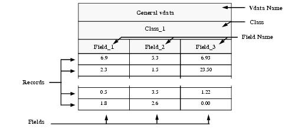
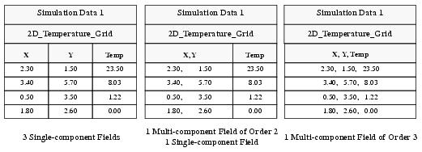
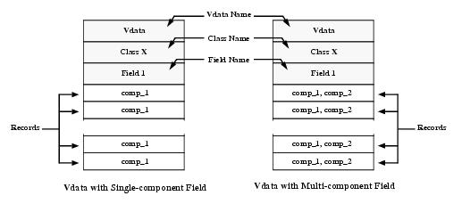
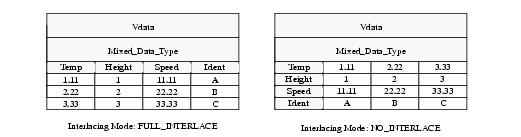
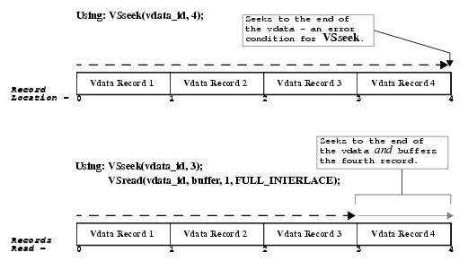
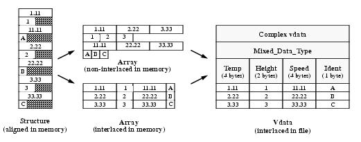

HDF User’s Guide
Version 4.2r4[Top] [Prev][Next]
|
|
HDF User’s GuideVersion 4.2r4 |
[Top] [Prev][Next] |
Chapter 4 -- Vdatas (VS API)
4.1 Chapter Overview
This chapter describes the vdata data model, the Vdata interface (also called the VS interface or the VS API), and the vdata programming model.
4.2 The Vdata Model
The HDF Vdata model provides a framework for storing customized tables, or vdatas, in HDF files. The term "vdata" is an abbreviation of "vertex data", alluding to the fact that the object was first implemented in HDF to store the vertex and edge information of polygon sets. The vdata design has since been generalized to apply to a broader variety of applications.
A vdata is like a table that consists of a collection of records whose values are stored in fixed-length fields. All records have the same structure and all values in each field have the same data type. Vdatas are uniquely identified by a name, a class, and a series of individual field names. (See Figure 4a.)
FIGURE 4a Vdata Table StructureA vdata name is a label typically assigned to describe the contents of a vdata. It often serves as a search key to locate a vdata in a file. A vdata class further distinguishes a particular vdata by identifying the purpose or the use of its data. Finally, vdata field names are labels assigned to the fields in the vdata.
4.2.1 Records and Fields
Each record in a vdata is composed of one or more fixed-length fields. Vdata records and fields are identified by an index. The record and field indexes are zero-based and are separately incremented by one for each additional record and field in the vdata.
Every field in a vdata is assigned a data type when the vdata is created. The data type of a field may be any basic HDF data type: character, 8-bit, 16-bit, and 32-bit signed and unsigned integers, and 32-bit and 64-bit floating point numbers. The maximum length of a vdata record is 65,535 bytes.
The Vdata model allows multiple entries per field as long as they have the same data type. The number of entries or components in a field is called the order of the field.
The organizational structure of a vdata is often determined by the data types of its data set or sets. For example, given a data set describing the location ("X,Y") and temperature ("Temp") of points in a plane, there are several ways to organize the data. (See Figure 4b.) If the "X", "Y" and "Temp" values are of the same data type, they could be stored as three single-component fields, as a two-component "X,Y" field and a single-component "Temp" field, or as a three-component "X,Y,Temp" field. Generally the "X,Y" data is stored in a single field, but HDF places no restrictions on the organization of field data and there are no significant HDF performance issues involved in choosing one organizational regime over another.
FIGURE 4b Three Different Vdata Structures for Data of the Same Number Type4.3 The Vdata Interface
The Vdata interface consists of routines that are used to store and retrieve information about vdatas and their contents.
4.3.1 Header Files Used by the Vdata Interface
The header file "hdf.h" must be included in programs that invoke Vdata interface routines.
4.3.2 Vdata Library Routines
Vdata routines begin with the prefixes "VS", "VF", "VSQ", and "VH" in C, and "vsf", "vf", "vsq", and "vh" in FORTRAN-77. Vdata routines perform most general vdata operations, VF routines query information about vdata fields, and VSQ routines query information about specific vdatas. VH routines are high-level procedures that write to single-field vdatas.
Vdata routines let you define, organize and manipulate vdatas. They are categorized as follows and are listed in Table 4A by their categories:
- Access routines control access to files and vdatas. Data transfer to and from a vdata can only occur after the access to the vdata has been initiated and before it is terminated. Some Vgroup interface routines are included since they are used interchangeably between the Vdata and Vgroup interfaces. Refer to Chapter 5, Vgroups (V API), for a description of the Vgroup interface.
- Read and write routines store and retrieve the contents of and the information about a vdata.
- File inquiry routines provide information about how vdatas are stored in a file. They are useful for locating vdatas in the file.
- Vdata inquiry routines provide specific information about a given vdata, including the vdata's name, class, number of records, tag and reference number pairs, size, and interlace mode.
- Field inquiry routines provide specific information about the fields in a given vdata, including the field's size, name, order, and type, and the number of fields in the vdata.
TABLE 4A Vdata Interface Routines
4.3.3 Identifying Vdatas in the Vdata Interface
The Vdata interface identifies vdatas in several ways. Before an existing vdata is accessible, it is uniquely identified by its reference number. The reference number of a vdata can be obtained from the name or the class of the vdata, or by sequentially traversing the file. The concept of reference number is discussed in Section 2.2.2.1 on page 8.
When a vdata is attached, it is assigned with an identifier, called vdata id, which is used by the Vdata interface routines in accessing the vdata.
4.3.4 Programming Model for the Vdata Interface
The programming model for accessing vdatas is as follows:
To access a vdata, the calling program must contain the following calls, which are individually explained in the following subsections:
C: file_id = Hopen(filename, file_access_mode, num_dds_block);
status = Vstart(file_id);
vdata_id = VSattach(file_id, vdata_ref, vdata_access_mode);
<Optional operations>
status = VSdetach(vdata_id);
status = Vend(file_id);
status = Hclose(file_id);
FORTRAN: file_id = hopen(filename, file_access_mode, num_dds_block)
status = vfstart(file_id)
vdata_id = vsfatch(file_id, vdata_ref, vdata_access_mode)
<Optional operations>
status = vsfdtch(vdata_id)
status = vfend(file_id)
status = hclose(file_id)
4.3.5 Accessing Files and Vdatas: Vstart and VSattach
An HDF file must be opened by Hopen before it can be accessed using the Vdata interface. Hopen is described in Chapter 2, HDF Fundamentals.
Vstart must be called for every file to be accessed. This routine initializes the internal vdata structures used by the Vdata interface. Vstart has only one argument, the file identifier (file_id) returned by Hopen, and returns either
SUCCEED(or0) orFAIL(or-1). Note that the Vstart routine is used by both the Vdata and Vgroup interfaces.VSattach initiates access to a vdata and must be called before any operations on the vdata may occur. VSattach takes three arguments: file_id, vdata_ref, and vdata_access_mode, and returns either a vdata identifier or
FAIL(or-1).The argument file_id is the file identifier returned by Hopen and vdata_ref is the reference number that identifies the vdata to be accessed. Specifying vdata_ref with a value of
-1will create a new vdata; specifying vdata_ref with a nonexistent reference number will return an error code ofFAIL(or-1); and specifying vdata_ref with a valid reference number will initiate access to the corresponding vdata.If an existing vdata's reference number is unknown, it must be obtained prior to the VSattach call. (Refer to Chapter 2, HDF Fundamentals, for a description of reference numbers.) The HDF library provides two routines for this purpose, VSfind and VSgetid. VSfind can be used to obtain the reference number of a vdata when the vdata's name is known. VSgetid can be used to obtain the reference number when only the location of the vdata within the file is known; this is often discovered by sequentially traversing the file. These routines are discussed in Section 4.7.2 on page 176 and Section 4.7.3 on page 176.
The argument vdata_access_mode specifies the access mode ("r" for read-only access or "w" for read and write access) for subsequent operations on the specified vdata. Although several HDF user programs may simultaneously read from one vdata, only one write access is allowed at a time. The "r" access mode may only be used with existing vdatas; the "w" access mode is valid with both new vdatas (vdata_ref = -1) and existing vdatas.
Note that, although a vdata can be created without being written with data, either the routine VSsetname or VSsetfields must be called in order for the vdata to exist in the file.
The parameters for Vstart and VSattach are further defined in Table 4B on page 139.
4.3.6 Terminating Access to Vdatas and Files: VSdetach and Vend
VSdetach terminates access to a vdata by updating pertinent information and freeing all memory associated with the vdata and initialized by VSattach. Once access to the vdata is terminated, its identifier becomes invalid and any attempt to access it will result in an error condition. VSdetach takes only one argument, the vdata identifier that is returned by VSattach, and returns either
SUCCEED(or0) orFAIL(or-1).Vend releases all internal data structures allocated by Vstart. Vend must be called once for each call to Vstart and only after access to all vdatas have been terminated (i.e., all calls to VSdetach have been made). Attempts to call Vdata interface routines after calling Vend will result in an error condition. Vend takes one argument, the file identifier that is returned by Hopen, and returns either
SUCCEED(or0) orFAIL(or-1). Note that the Vend routine is used by both the Vdata and Vgroup interfaces.In summary, successfully terminating access to a vdata requires one VSdetach call for each call to VSattach and one Vend call for each call to Vstart.
The parameters for VSdetach and Vend are further defined in Table 4B.
Hclose terminates access to a file and should only be called after all Vend calls have been made to close the Vdata interface. Refer to Chapter 2, HDF Fundamentals, for a description of Hclose.
TABLE 4B Vstart, VSattach, VSdetach, and Vend Parameter ListsEXAMPLE 1. Accessing a Vdata in an HDF FileThis example illustrates the use of Hopen/hopen, Vstart/vfstart, VSattach/vsfatch, VSdetach/vsfdtch, Vend/vfend, and Hclose/hclose to create and to access different vdatas from different HDF files.
The program creates an HDF file, named "General_Vdatas.hdf", containing a vdata. The program also creates a second HDF file, named "Two_Vdatas.hdf", containing two vdatas. Note that, in this example, the program does not write data to these vdatas. Also note that before closing the file, the access to its vdatas and its corresponding Vdata interface must be terminated. These examples request information about a specific vdata.
C:#define FILE1_NAME "General_Vdatas.hdf"
#define FILE2_NAME "Two_Vdatas.hdf"
#define VDATA_NAME "Vdata 1"
#define VDATA_CLASS "Empty Vdatas"
main( )
{
/************************* Variable declaration **************************/
intn status_n; /* returned status for functions returning an intn */
int32 status_32, /* returned status for functions returning an int32 */
file1_id, file2_id,
vdata_id, vdata1_id, vdata2_id,
vdata_ref = -1; /* ref number of a vdata, set to -1 to create */
/********************** End of variable declaration **********************/
/*
* Create the first HDF file.
*/
file1_id = Hopen (FILE1_NAME, DFACC_CREATE, 0);
/*
* Initialize the VS interface associated with the first HDF file.
*/
status_n = Vstart (file1_id);
/*
* Create a vdata in the first HDF file.
*/
vdata_id = VSattach (file1_id, vdata_ref, "w");
/*
* Assign a name to the vdata.
*/
status_32 = VSsetname (vdata_id, VDATA_NAME);
/*
* Other operations on the vdata identified by vdata_id can be carried
* out starting from this point.
*/
/*
* Create the second HDF file.
*/
file2_id = Hopen (FILE2_NAME, DFACC_CREATE, 0);
/*
* Initialize the VS interface associated with the second HDF file.
*/
status_n = Vstart (file2_id);
/*
* Create the first vdata in the second HDF file.
*/
vdata1_id = VSattach (file2_id, vdata_ref, "w");
/*
* Create the second vdata in the second HDF file.
*/
vdata2_id = VSattach (file2_id, vdata_ref, "w");
/*
* Assign a class name to these vdatas.
*/
status_32 = VSsetclass (vdata1_id, VDATA_CLASS);
status_32 = VSsetclass (vdata2_id, VDATA_CLASS);
/*
* Other operations on the vdatas identified by vdata1_id and vdata2_id
* can be carried out starting from this point.
*/
/*
* Terminate access to the first vdata in the second HDF file.
*/
status_32 = VSdetach (vdata1_id);
/*
* Terminate access to the second vdata in the second HDF file.
*/
status_32 = VSdetach (vdata2_id);
/*
* From this point on, any operations on the vdatas identified by vdata1_id
and vdata2_id are invalid but not on the vdata identified by vdata_id.
*/
/*
* Terminate access to the VS interface associated with the second HDF file.
*/
status_n = Vend (file2_id);
/*
* Close the second HDF file.
*/
status_n = Hclose (file2_id);
/*
* Terminate access to the vdata in the first HDF file.
*/
status_32 = VSdetach (vdata_id);
/*
* Terminate access to the VS interface associated with the first HDF file.
*/
status_n = Vend (file1_id);
/*
* Close the first HDF file.
*/
status_n = Hclose (file1_id);
}
FORTRAN:program create_vdatas implicit none C C Parameter declaration C character*18 FILE1_NAME character*14 FILE2_NAME character*7 VDATA_NAME character*12 VDATA_CLASS C parameter (FILE1_NAME = 'General_Vdatas.hdf', + FILE2_NAME = 'Two_Vdatas.hdf', + VDATA_NAME = 'Vdata 1', + VDATA_CLASS = 'Empty Vdatas') integer DFACC_CREATE parameter (DFACC_CREATE = 4) C C Function declaration C integer hopen, hclose integer vfstart, vsfatch, vsfsnam, vsfscls, vsfdtch, vfend C C**** Variable declaration ******************************************* C integer status integer file1_id, file2_id integer vdata_id, vdata1_id, vdata2_id integer vdata_ref C C**** End of variable declaration ************************************ C C C Create the first HDF file. C file1_id = hopen(FILE1_NAME, DFACC_CREATE, 0) C C Initialize the VS interface associated with the first HDF file. C status = vfstart(file1_id) C C Create a vdata in the first HDF file. C vdata_ref = -1 vdata_id = vsfatch(file1_id, vdata_ref, 'w') C C Assign a name to the vdata. C status = vsfsnam(vdata_id, VDATA_NAME) C C Other operations on the vdata identified by vdata_id can be carried out C starting from this point. C C Create the second HDF file. C file2_id = hopen(FILE2_NAME, DFACC_CREATE, 0) C C Initialize the VS interface associated with the second HDF file. C status = vfstart(file2_id) C C Create the first vdata in the second HDF file. C vdata1_id = vsfatch(file2_id, vdata_ref, 'w') C C Create the second vdata in the second HDF file. C vdata2_id = vsfatch(file2_id, vdata_ref, 'w') C C Assign a class name to these vdatas. C status = vsfscls(vdata1_id, VDATA_CLASS) status = vsfscls(vdata2_id, VDATA_CLASS) C C Other operations on the vdatas identified by vdata1_id and vdata2_id C can be carried out starting from this point. C C C Terminate access to the first vdata in the second HDF file. C status = vsfdtch(vdata1_id) C C Terminate access to the second vdata in the second HDF file. C status = vsfdtch(vdata2_id) C C Terminate access to the VS interface associated with the second HDF file. C status = vfend(file2_id) C C Close the second HDF file. C status = hclose(file2_id) C C Terminate access to the vdata in the first HDF file. C status = vsfdtch(vdata_id) C C terminate access to the VS interface associated with the first HDF file. C status = vfend(file1_id) C C Close the first HDF file. C status = hclose(file1_id) end4.4 Creating and Writing to Single-Field Vdatas: VHstoredata and VHstoredatam
There are two methods of writing vdatas that contain one field per record. One requires the use of several VS routines and the other involves the use of VHstoredata or VHstoredatam, two high-level routines that encapsulate several VS routines into one.
The high-level VH routines are useful when writing one-field vdatas and complete information about each vdata is available. If you cannot provide full information about a vdata, you must use the VS routines described in the next section.
Figure 4c shows two examples of single-field vdatas. The fields can be single-component or multi-component fields. With a multi-component field, they may contain one or more values of the same data type.
FIGURE 4c Single- and Multi-component VdatasVHstoredata creates then writes a vdata with one single-component field. VHstoredatam creates and writes a vdata with one multi-component field. In both cases the following steps are involved:
These steps correspond to the following sequence of function calls:
C: file_id = Hopen(filename, file_access_mode, num_dds_block);
status = Vstart(file_id);
/* Either VHstoredata or VHstoredatam can be called here. */
vdata_ref = VHstoredata(file_id, fieldname, buf, n_records, data_type, vdata_name, vdata_class);
OR vdata_ref = VHstoredatam(file_id, fieldname, buf, n_records, data_type, vdata_name, vdata_class, order);
status = Vend(file_id);
status = Hclose(file_id);
FORTRAN: file_id = hopen(filename, file_access_mode, num_dds_block)
status = vfstart(file_id)
C Either vhfsd/vhfscd or vhfsdm/vhfscdm can be called here.
vdata_ref = vhfsd(file_id, fieldname, buf, n_records, data_type, vdata_name, vdata_class)
OR vdata_ref = vhfscd(file_id, fieldname, buf, n_records, data_type, vdata_name, vdata_class)
OR
vdata_ref = vhfsdm(file_id, fieldname, buf, n_records, data_type, vdata_name, vdata_class, order)
OR vdata_ref = vhfscdm(file_id, fieldname, buf, n_records, data_type, vdata_name, vdata_class, order)
status = vfend(file_id)
status = hclose(file_id)
The first seven parameters of VHstoredata and VHstoredatam are the same. The parameter file_id is the file identifier returned by Hopen. The parameter fieldname specifies the name of the vdata field. The parameter buf contains the data to be stored into the vdata. In C, the data type of the parameter buf is uint8; in FORTRAN-77, it is the data type of the data to be stored. The parameters n_records and data_type contain the number of records in the vdata and the data type of the vdata data. The parameters vdata_name and vdata_class specify the name and class of the vdata. The parameter order of VHstoredatam specifies the order of the field. The maximum length of the vdata name is given by the
VSNAMELENMAX(or64) as defined in the header file "hlimits.h".Note that these two routines do not overwrite existing vdatas but only create new ones before storing the data.
The FORTRAN-77 version of VHstoredata has two routines: vhfsd for numeric data and vhfscd for character data; the FORTRAN-77 version of VHstoredatam has two routines: vhfsdm for numeric data and vhfscdm for character data.
Both routines return the reference number of the newly-created vdata or
FAIL(or-1) if the operation is unsuccessful. The parameters for VHstoredata and VHstoredatam are further described in Table 4C.TABLE 4C VHstoredata and VHstoredatam Parameter ListsEXAMPLE 2. Creating and Storing One-field Vdatas Using VHstoredata and VHstoredatamThis example illustrates the use of VHstoredata/vhfscd and VHstoredatam/vhfsdm to create single-field vdatas.
This example creates and writes two vdatas to the file "General_Vdatas.hdf". The first vdata is named "First Vdata", contains 5 records, and belongs to a class named "5x1 Array". The second vdata is named "Second Vdata", contains 6 records, and belongs to a class named "6x4 Array". The field of the first vdata is a single-component field, i.e., order of 1, and named "Single-component Field". The field of the second vdata has an order of 4 and is named "Multi-component Field".
In these examples two vdatas are created. The first vdata has five records with one field of order 1 and is created from a 5 x 1 array in memory. The second vdata has six records with one field of order 4 and is created from a 6 x 4 array in memory.
C:#include "hdf.h" #define FILE_NAME "General_Vdatas.hdf" #define CLASS1_NAME "5x1 Array" #define CLASS2_NAME "6x4 Array" #define VDATA1_NAME "First Vdata" #define VDATA2_NAME "Second Vdata" #define FIELD1_NAME "Single-component Field" #define FIELD2_NAME "Multi-component Field" #define N_RECORDS_1 5 /* number of records the first vdata contains */ #define N_RECORDS_2 6 /* number of records the second vdata contains */ #define ORDER_2 4 /* order of the field in the second vdata */ /* Note that the order of the field in the first vdata is 1 */ main( ) { /************************* Variable declaration **************************/ intn status_n; /* returned status for functions returning an intn */ int32 status_32; /* returned status for functions returning an int32 */ int32 file_id, vdata1_ref, vdata2_ref; /* * Define an array to buffer the data of the first vdata. */ char8 vdata1_buf [N_RECORDS_1] = {'V', 'D', 'A', 'T', 'A'}; /* * Define an array to buffer the data of the second vdata. */ int32 vdata2_buf [N_RECORDS_2][ORDER_2] = {{1, 2, 3, 4}, {2, 4, 6, 8}, {3, 6, 9, 12}, {4, 8, 12, 16}, {5, 10, 15, 20}, {6, 12, 18, 24}}; /********************** End of variable declaration **********************/ /* * Open the HDF file for writing. */ file_id = Hopen (FILE_NAME, DFACC_WRITE, 0); /* * Initialize the VS interface. */ status_n = Vstart (file_id); /* * Create the first vdata and populate it with data from the vdata1_buf * array. Note that the buffer vdata1_buf is cast to (uint8 *) for the * benefit of generic data type. */ vdata1_ref = VHstoredata (file_id, FIELD1_NAME, (uint8 *)vdata1_buf, N_RECORDS_1, DFNT_CHAR8, VDATA1_NAME, CLASS1_NAME); /* * Create the second vdata and populate it with data from the vdata2_buf * array. */ vdata2_ref = VHstoredatam (file_id, FIELD2_NAME, (uint8 *)vdata2_buf, N_RECORDS_2, DFNT_INT32, VDATA2_NAME, CLASS2_NAME, ORDER_2); /* * Terminate access to the VS interface and close the HDF file. */ status_n = Vend (file_id); status_32 = Hclose (file_id); }FORTRAN:program create_onefield_vdatas implicit none C C Parameter declaration C character*18 FILE_NAME character*9 CLASS1_NAME character*9 CLASS2_NAME character*11 VDATA1_NAME character*12 VDATA2_NAME character*22 FIELD1_NAME character*21 FIELD2_NAME integer N_RECORDS_1, N_RECORDS_2 integer ORDER_2 C parameter (FILE_NAME = 'General_Vdatas.hdf', + CLASS1_NAME = '5x1 Array', + CLASS2_NAME = '6x4 Array', + VDATA1_NAME = 'First Vdata', + VDATA2_NAME = 'Second Vdata', + FIELD1_NAME = 'Single-component Field', + FIELD2_NAME = 'Multi-component Field') parameter (N_RECORDS_1 = 5, + N_RECORDS_2 = 6, + ORDER_2 = 4) integer DFACC_WRITE, DFNT_CHAR8, DFNT_INT32 parameter (DFACC_WRITE = 2, + DFNT_CHAR8 = 4, + DFNT_INT32 = 24) C C Function declaration C integer hopen, hclose integer vfstart, vhfscd, vhfsdm, vfend C C**** Variable declaration ******************************************* C integer status integer file_id integer vdata1_ref, vdata2_ref character vdata1_buf(N_RECORDS_1) integer vdata2_buf(ORDER_2, N_RECORDS_2) data vdata1_buf /'V','D','A','T','A'/ data vdata2_buf / 1, 2, 3, 4, + 2, 4, 6, 8, + 3, 6, 9, 12, + 4, 8, 12, 16, + 5, 10, 15, 20, + 6, 12, 18, 24/ C C**** End of variable declaration ************************************ C C C Open the HDF file for writing. C file_id = hopen(FILE_NAME, DFACC_WRITE, 0) C C Initialize the VS interface. C status = vfstart(file_id) C C Create the first vdata and populate it with data from vdata1_buf array. C vdata1_ref = vhfscd(file_id, FIELD1_NAME, vdata1_buf, N_RECORDS_1, + DFNT_CHAR8, VDATA1_NAME, CLASS1_NAME) C C Create the second vdata and populate it with data from vdata2_buf array. C vdata2_ref = vhfsdm(file_id, FIELD2_NAME, vdata2_buf, N_RECORDS_2, + DFNT_INT32, VDATA2_NAME, CLASS2_NAME, + ORDER_2) C C Terminate access to the VS interface and close the HDF file. C status = vfend(file_id) status = hclose(file_id) end4.5 Writing to Multi-Field Vdatas
There are several steps involved in creating general vdatas with more than one field: define the vdata, define the fields of the vdata, and write the vdata to the file. These steps are usually executed within a single program, although it is also possible to define an empty vdata in anticipation of writing data to it at a later time.
4.5.1 Creating Vdatas
Creating an empty vdata involves the following steps:
Like the high-level VH interface, the Vdata interface does not retain default settings from one operation to the next or from one file to the next. Each time a vdata is created, its definitions must be explicitly reset.
To create a multi-field vdata, the calling program must contain the following:
C: file_id = Hopen(filename, file_access_mode, num_dds_block);
status = Vstart(file_id);
vdata_id = VSattach(file_id, -1, vdata_access_mode);
status = VSsetname(vdata_id, vdata_name);
status = VSsetclass(vdata_id, vdata_class);
status = VSfdefine(vdata_id, fieldname1, data_type1, order1);
. . . . . . . . . .
status = VSfdefine(vdata_id, fieldnameN, data_typeN, orderN);
status = VSsetfields(vdata_id, fieldname_list);
status = VSsetinterlace(vdata_id, interlace_mode);
status = VSdetach(vdata_id);
status = Vend(file_id);
status = Hclose(file_id);
FORTRAN: file_id = hopen(filename, file_access_mode, num_dds_block)
status = vfstart(file_id)
vdata_id = vsfatch(file_id, -1, vdata_access_mode)
status = vsfsnam(vdata_id, vdata_name)
status = vsfscls(vdata_id, vdata_class)
status = vsffdef(vdata_id, fieldname1, data_type1, order1)
. . . . . . . . . .
status = vsffdef(vdata_id, fieldnameN, data_typeN, orderN)
status = vsfsfld(vdata_id, fieldname_list)
status = vsfsint(vdata_id, interlace_mode)
status = vsfdtch(vdata_id)
status = vfend(file_id)
status = hclose(file_id)
In the routines that follow, vdata_id is the vdata identifier returned by VSattach.
4.5.1.1 Assigning a Vdata Name and Class: VSsetname and VSsetclass
VSsetname assigns a name to a vdata. If not explicitly named by a call to VSsetname, the name of the vdata is set by default to
NULL. A name may be assigned and reassigned at any time after the vdata is created. The parameter vdata_name contains the name to be assigned to the vdata.VSsetclass assigns a class to a vdata. If VSsetclass is not called, the vdata's class is set by default to
NULL. As with the vdata name, the class may be assigned and reassigned any time after the vdata is created. The parameter vdata_class contains the class name to be assigned to the vdata.VSsetname and VSsetclass return either
SUCCEED(or0) orFAIL(or-1). The parameters for these routines are further defined in Table 4E on page 152.4.5.1.2 Defining a Field within a Vdata: VSfdefine
VSfdefine defines a field within a newly-created vdata. Each VSfdefine call assigns the name contained in the argument fieldname, the data type contained in the argument data_type, and the order contained in the argument order to one new field. Once data is written to a vdata, the name, data type and order of the field may not be modified or deleted.
The Vdata interface also provides certain predefined fields. A predefined field has a specific name, data type, and order, so there is no need to call VSfdefine to define a predefined field. Some applications may require the use of predefined fields in vdatas. Available predefined fields are discussed in Table 4D.
Note that VSfdefine does not allocate memory for the field, but simply introduces the field. The field definition must be completed by VSsetfields, which is discussed in Section 4.5.1.3 on page 151.
VSfdefine returns either
SUCCEED(or0) orFAIL(or-1). The parameters for VSfdefine are further described in Table 4E on page 152.TABLE 4D Predefined Data Types and Field Names for Vdata Fields
4.5.1.3 Initializing the Fields for Write Access: VSsetfields
VSsetfields initializes read and write access to the fields in a vdata. It must be called prior to read or write operations. Initializing for read access is discussed in Section 4.6.1 on page 167. For writing, VSsetfields specifies the fields to be written and the order in which they are to be placed.
The parameter fieldname_list is a comma-separated list of the field names, with no white space included. The fields can be either the predefined fields or the fields that have been previously introduced by VSfdefine. VSfdefine allows a user to declare a field, along with its data type and order, but VSsetfields finalizes the definition by allowing the user to select the fields that are to be included in the vdata. Thus, any fields created by VSfdefine that are not in the parameter fieldname_list of VSsetfields will be ignored. This feature was originally intended for interactive-mode users. The combined width of the fields in the parameter fieldname_list is also the length of the record and must be less than
MAX_FIELD_SIZE(or65535). An attempt to create a larger record will cause VSsetfields to returnFAIL(or-1).VSsetfields returns either
SUCCEED(or0) orFAIL(or-1). The parameters for VSsetfields are further defined in Table 4E on page 152.4.5.1.4 Specifying the Interlace Mode: VSsetinterlace
The Vdata interface supports two types of interlacing: file interlacing and buffer interlacing. File interlacing determines how data is stored in a file and buffer interlacing determines how data is stored in memory. The Vdata interface can write data from a buffer to a file in an interlaced or non-interlaced manner. It can also read data from a file in an interlaced or non-interlaced manner.
The VSread and VSwrite routines set the buffer's interlace mode. The VSwrite routine will be discussed in Section 4.5.2.2 on page 154 and the VSread routine will be discussed in Section 4.6.2 on page 167.
VSsetinterlace sets the file interlacing mode for a vdata. Setting the parameter interlace_mode to
FULL_INTERLACE(or0) fills the vdata by record, whereas specifyingNO_INTERLACE(or1) fills the vdata by field. (See Figure 4d.) For multi-component fields, all components are treated as a single field.As with file interlacing, the default buffer interlace mode is
FULL_INTERLACEbecause it is more efficient to write complete records than it is to write fields if the file and buffer interlace modes are the same, although both require the same amount of disk space.In Figure 4d, the illustrated vdata has four fields and three records.
FIGURE 4d Interlaced and Non-Interlaced Vdata ContentsVSsetinterlace can only be used for operations on new vdatas as the interlacing cannot be changed once the data has been written to a vdata. Records in a fully interlaced vdata can be written record-by-record and, thus, can be appended; however, all records in a non-interlaced vdata must be written at the same time.
VSsetinterlace returns either
SUCCEED(or0) orFAIL(or-1). The parameters for VSsetinterlace are further described in Table 4E.TABLE 4E VSsetname, VSsetclass, VSfdefine, VSsetfields, and VSsetinterlace Parameter Lists4.5.2 Writing Data to Vdatas
This section describes the vdata writing operation (VSwrite), random access to vdata (VSseek), and packing and unpacking mechanisms that allow storing vdata fields of different data types (VSfpack).
Writing to a vdata requires the following steps:
These steps correspond to the following sequence of function calls:
C: file_id = Hopen(filename, file_access_mode, num_dds_block);
status = Vstart(file_id);
vdata_id = VSattach(file_id, vdata_ref, vdata_access_mode);
status = VSsetfields(vdata_id, fieldname_list);
record_pos = VSseek(vdata_id, record_index);
num_of_recs = VSwrite(vdata_id, databuf, n_records, interlace_mode);
status = VSdetach(vdata_id);
status = Vend(file_id);
status = Hclose(file_id);
FORTRAN: file_id = hopen(filename, file_access_mode, num_dds_block)
status = vfstart(file_id)
vdata_id = vsfatch(file_id, vdata_ref, vdata_access_mode)
status = vsfsfld(vdata_id, fieldname_list);
record_pos = vsfseek(vdata_id, record_index);
num_of_recs = vsfwrt(vdata_id, databuf, n_records, interlace_mode)
OR num_of_recs = vsfwrtc(vdata_id, databuf, n_records, interlace_mode)
OR num_of_recs = vsfwrit(vdata_id, databuf, n_records, interlace_mode)
status = vsfdtch(vdata_id)
status = vfend(file_id)
status = hclose(file_id)
4.5.2.1 Resetting the Current Position within Vdatas: VSseek
VSseek provides a mechanism for random access to fully-interlaced vdatas. Random-access for non-interlaced vdatas is not available. The parameter record_index is the position of the record to be written. The position of the first record in a vdata is specified by record_index =
0. Any vdata operation will be performed on this record by default; vdata operations on other records require that VSseek be called first to specify the target record.Note that VSseek has been designed for the purpose of overwriting data, not appending data. That means VSseek puts the current record pointer at the beginning of the sought record and the subsequent write will overwrite the record. To append data to a vdata, the current record pointer must be put at the end of the last record. Thus, you must seek to the last record then read this record so that the current record pointer will be put at the end of the record. A write operation will now start at the end of the last record in the vdata. Figure 4e illustrates a situation where VSseek can be misused while attempting to append data to the vdata and how VSread is called to correctly place the record pointer at the end of the vdata for appending.
Note that, because the record location numbering starts at 0, the record location and the value of the parameter record_index are off by 1. For example, reading the fourth record in the buffer requires record_index to be set to 3.
See the notes regarding the potential performance impact of appendable data sets in Section 14.4.3, "Unlimited Dimension Data Sets (SDSs and Vdatas) and Performance."
FIGURE 4e Setting the Record Pointer to the End of a VdataIn this illustration, the vdata to which we plan to append data contains 4 records. Using VSseek to seek to the end of the fourth record by setting the parameter record_index to 4 results in an error condition. Setting the parameter record_index to 3 places the current record pointer at the beginning of the fourth record. We then use VSread to read the contents of the fourth record into a buffer; this moves the current record pointer to the end of the fourth record. The contents of the buffer can then be discarded and a write operation can be called to append data to the end of the vdata.
VSseek returns the sought record location or
FAIL(or-1). Its parameters are further defined in Table 4F.4.5.2.2 Writing to a Vdata: VSwrite
VSwrite writes buffered data to a specified vdata. The parameter databuf is a buffer containing the records to be stored in the vdata. The parameter n_records specifies the number of records to be stored.
Recall that the file interlacing is set by VSsetinterlace when the vdata is created, and the buffer interlacing is specified by the parameter interlace_mode in the call to VSwrite when data is written to the file. The array databuf is assumed to be organized in memory as specified by interlace_mode. Setting interlace_mode to
FULL_INTERLACE(or0) indicates that the array in memory is organized by record, whereas toNO_INTERLACE(or1) indicates that the array is organized by field. (See Figure 4f.) VSwrite will write interlaced or non-interlaced data to a vdata in a file: interlaced data in the buffer can be written to the vdata in the file as non-interlaced data and vice versa. If the data is to be stored with an interlace mode different from that of the buffer, VSsetinterlace (described in Section 4.5.1.4 on page 151) must be called prior to VSwrite. Multiple write operations can only be used on fully-interlaced vdatas in the file.FIGURE 4f Writing Interlaced or Non-interlaced Buffers into Interlaced or Non-interlaced VdatasThe data in the array databuf is assumed to contain the exact amount of data in the order needed to fill the fields defined in the last call to VSsetfields. Because VSwrite writes the contents of databuf contiguously to the vdata, any "padding" due to record alignment must be removed before attempting to write from databuf to the vdata. For more information on alignment padding see Section 4.5.2.4 on page 160.
It should be remembered that VSwrite writes whole records, not individual fields. If a modification to one field within a previously-written record is needed, the contents of the record must first be preserved by reading it to a buffer with VSread, which will be described in Section 4.6.2 on page 167; the record must then be updated in the buffer and written back to the file with VSwrite.
To store a vdata to the file after being created, either VSsetname, VSsetfields, or VSwrite must be called before VSdetach for the vdata. If VSwrite is not called, the vdata created will be empty.
The FORTRAN-77 version of VSwrite has three routines: vsfwrt is for buffered numeric data, vsfwrtc is for buffered character data and vsfwrit is for generic packed data.
VSwrite returns the total number of records written or
FAIL(or-1). Its parameters are further defined in Table 4F.TABLE 4F VSseek and VSwrite Parameter ListsEXAMPLE 3. Writing a Vdata of Homogeneous TypeThis example illustrates the use of VSfdefine/vsffdef, VSsetname/vsfsnam, VSsetclass/vsfscls, VSsetfields/vsfsfld, and VSwrite/vsfwrt to create and write a three-field vdata to the file "General_Vdatas.hdf". Although the fields have data of the same type, they have different orders.
To clarify the illustration, let us assume that the vdata is used to contain the data of some particles collected from an experiment. Each record of the data includes the position of a particle, its weight, and the minimum and maximum temperature the particle can endure. The vdata is named "Solid Particle", contains 10 records, and belongs to a class, named "Particle Data". The fields of the vdata include "Position", "Mass", and "Temperature". The field "Position" has an order of 3 for the x, y, and z values representing the position of a particle. The field "Mass" has an order of 1. The field "Temperature" has an order of 2 for the minimum and maximum temperature. The program creates the vdata, sets its name and class name, defines its fields, and then writes the data to it.
C:#include "hdf.h" #define FILE_NAME "General_Vdatas.hdf" #define N_RECORDS 10 /* number of records the vdata contains */ #define ORDER_1 3 /* order of first field */ #define ORDER_2 1 /* order of second field */ #define ORDER_3 2 /* order of third field */ #define CLASS_NAME "Particle Data" #define VDATA_NAME "Solid Particle" #define FIELD1_NAME "Position" /* contains x, y, z values */ #define FIELD2_NAME "Mass" /* contains weight values */ #define FIELD3_NAME "Temperature" /* contains min and max values */ #define FIELDNAME_LIST "Position,Mass,Temperature" /* No spaces b/w names */ /* number of values per record */ #define N_VALS_PER_REC (ORDER_1 + ORDER_2 + ORDER_3) main( ) { /************************* Variable declaration **************************/ intn status_n; /* returned status for functions returning an intn */ int32 status_32, /* returned status for functions returning an int32 */ file_id, vdata_id, vdata_ref = -1, /* ref number of a vdata, set to -1 to create */ num_of_records; /* number of records actually written to vdata */ int16 rec_num; /* current record number */ float32 data_buf[N_RECORDS][N_VALS_PER_REC]; /* buffer for vdata values */ /********************** End of variable declaration **********************/ /* * Open the HDF file for writing. */ file_id = Hopen (FILE_NAME, DFACC_WRITE, 0); /* * Initialize the VS interface. */ status_n = Vstart (file_id); /* * Create a new vdata. */ vdata_id = VSattach (file_id, vdata_ref, "w"); /* * Set name and class name of the vdata. */ status_32 = VSsetname (vdata_id, VDATA_NAME); status_32 = VSsetclass (vdata_id, CLASS_NAME); /* * Introduce each field's name, data type, and order. This is the first * part in defining a field. */ status_n = VSfdefine (vdata_id, FIELD1_NAME, DFNT_FLOAT32, ORDER_1 ); status_n = VSfdefine (vdata_id, FIELD2_NAME, DFNT_FLOAT32, ORDER_2 ); status_n = VSfdefine (vdata_id, FIELD3_NAME, DFNT_FLOAT32, ORDER_3 ); /* * Finalize the definition of the fields. */ status_n = VSsetfields (vdata_id, FIELDNAME_LIST); /* * Buffer the data by the record for fully interlaced mode. Note that the * first three elements contain the three values of the first field, the * fourth element contains the value of the second field, and the last two * elements contain the two values of the third field. */ for (rec_num = 0; rec_num < N_RECORDS; rec_num++) { data_buf[rec_num][0] = 1.0 * rec_num; data_buf[rec_num][1] = 2.0 * rec_num; data_buf[rec_num][2] = 3.0 * rec_num; data_buf[rec_num][3] = 0.1 + rec_num; data_buf[rec_num][4] = 0.0; data_buf[rec_num][5] = 65.0; } /* * Write the data from data_buf to the vdata with full interlacing mode. */ num_of_records = VSwrite (vdata_id, (uint8 *)data_buf, N_RECORDS, FULL_INTERLACE); /* * Terminate access to the vdata and to the VS interface, then close * the HDF file. */ status_32 = VSdetach (vdata_id); status_n = Vend (file_id); status_32 = Hclose (file_id); }FORTRAN:program write_to_vdata implicit none C C Parameter declaration C character*18 FILE_NAME character*13 CLASS_NAME character*14 VDATA_NAME character*8 FIELD1_NAME character*4 FIELD2_NAME character*11 FIELD3_NAME character*27 FIELDNAME_LIST integer N_RECORDS integer ORDER_1, ORDER_2, ORDER_3 integer N_VALS_PER_REC C parameter (FILE_NAME = 'General_Vdatas.hdf', + CLASS_NAME = 'Particle Data', + VDATA_NAME = 'Solid Particle', + FIELD1_NAME = 'Position', + FIELD2_NAME = 'Mass', + FIELD3_NAME = 'Temperature', + FIELDNAME_LIST = 'Position,Mass,Temperature') parameter (N_RECORDS = 10, + ORDER_1 = 3, + ORDER_2 = 1, + ORDER_3 = 2, + N_VALS_PER_REC = ORDER_1 + ORDER_2 + ORDER_3) integer DFACC_WRITE, DFNT_FLOAT32, FULL_INTERLACE parameter (DFACC_WRITE = 2, + DFNT_FLOAT32 = 5, + FULL_INTERLACE = 0) C C Function declaration C integer hopen, hclose integer vfstart, vsfatch, vsfsnam, vsfscls, vsffdef, vsfsfld, + vsfwrt, vsfdtch, vfend C C**** Variable declaration ******************************************* C integer status integer file_id, vdata_id integer vdata_ref, rec_num, num_of_records real data_buf(N_VALS_PER_REC, N_RECORDS) C C**** End of variable declaration ************************************ C C C Open the HDF file for writing. C file_id = hopen(FILE_NAME, DFACC_WRITE, 0) C C Initialize the VS interface. C status = vfstart(file_id) C C Create a new vdata. C vdata_ref = -1 vdata_id = vsfatch(file_id, vdata_ref, 'w') C C Set name and class name of the vdata. C status = vsfsnam(vdata_id, VDATA_NAME) status = vsfscls(vdata_id, CLASS_NAME) C C Introduce each field's name, data type, and order. This is the C first part in defining a field. C status = vsffdef(vdata_id, FIELD1_NAME, DFNT_FLOAT32, ORDER_1) status = vsffdef(vdata_id, FIELD2_NAME, DFNT_FLOAT32, ORDER_2) status = vsffdef(vdata_id, FIELD3_NAME, DFNT_FLOAT32, ORDER_3) C C Finalize the definition of the fields. C status = vsfsfld(vdata_id, FIELDNAME_LIST) C C Buffer the data by the record for fully interlaced mode. Note that the C first three elements contain the three values of the first field, C the forth element contains the value of the second field, and the last two C elements contain the two values of the third field. C do 10 rec_num = 1, N_RECORDS data_buf(1, rec_num) = 1.0 * rec_num data_buf(2, rec_num) = 2.0 * rec_num data_buf(3, rec_num) = 3.0 * rec_num data_buf(4, rec_num) = 0.1 + rec_num data_buf(5, rec_num) = 0.0 data_buf(6, rec_num) = 65.0 10 continue C C Write the data from data_buf to the vdata with the full interlacing mode. C num_of_records = vsfwrt(vdata_id, data_buf, N_RECORDS, + FULL_INTERLACE) C C Terminate access to the vdata and to the VS interface, and C close the HDF file. C status = vsfdtch(vdata_id) status = vfend(file_id) status = hclose(file_id) end4.5.2.3 Setting Up Linked Block Vdatas: VSsetblocksize and VSsetnumblocks
Unless otherwise specified, Vdata data sets stored in linked blocks employ a default size and number of linked blocks, as set in
HDF_APPENDABLE_BLOCK_LENandHDF_APPENDABLE_BLOCK_NUM, respectively. VSsetblocksize and VSsetnumblocks provide a mechanism for managing these values when the defaults are not appropriate.VSsetblocksize and VSsetnumblocks can be called to change the default linked block settings. The parameter vdata_id identifies the Vdata. The size of blocks is specified in bytes in block_size and number of blocks in num_blocks.
VSsetblocksize and VSsetnumblocks must be called before any data is written to a Vdata; once a linked block element has been created, neither the block size nor the number blocks can be changed. Further note that VSsetblocksize sets the block size only for blocks following the first block.
See the notes regarding the potential performance impact of block size in Section 14.4.2, "Tuning Linked Block Size to Enhance Performance."
VSsetblocksize and VSsetnumblocks both return
SUCCESS(or0) upon successful completion orFAIL(or-1). Their parameters are further defined in Table 4G.TABLE 4G VSsetblocksize and VSsetnumblocks Parameter Lists4.5.2.4 Packing or Unpacking Field Data: VSfpack
Storing fields of mixed data types is an efficient use of disk space and is useful in applications that use structures. However, while data structures in memory containing fields of variable lengths can contain alignment bytes, field data stored in a vdata cannot include them. This is true for both fully-interlaced and non-interlaced data. Because of this storing limitation, when variable-length field types are used, it is generally not possible to write data directly from a structure in memory into a vdata in a file with a VSwrite call or to read data directly into a buffer from the vdata with a call to VSread. Thus, when writing, VSfpack is used to pack field data into a temporary buffer by removing the padding, or alignment bytes, and when reading, to unpack field data into vdata fields by adding necessary alignment bytes. The syntax for VSfpack is as follows:
C: status = VSfpack(vdata_id, action, fields_in_buf, buf, buf_size, n_records, fieldname_list, bufptrs);
FORTRAN: status = vsfcpak(vdata_id, action, fields_in_buf, buf, buf_size, n_records, fieldname_list, bufptrs)
OR status = vsfnpak(vdata_id, action, fields_in_buf, buf, buf_size, n_records, fieldname_list, bufptrs)
The process of removing the alignment bytes is called "packing the array." An illustration of this process is provided in Figure 4g. The data provided by the user is stored in the structure in memory. The field values are aligned with padded bytes. VSfpack packs the data into the array in memory after removing the padded bytes. The packed data is then written to the vdata in the file by VSwrite.
FIGURE 4g Removing Alignment Bytes When Writing Data From a C Structure to a VdataThe process illustrated in Figure 4g can be read in the reverse direction for "unpacking the array," that is when using VSfpack to fill a structure in memory with vdata field data. In this case, alignment bytes are added to the field data to make the data conform to the specific alignment requirements of the platform.
VSfpack performs both tasks, packing and unpacking, and the parameter action specifies the appropriate action for the routine. Valid values for the parameter action are
_HDF_VSPACK(or0) for packing and_HDF_VSUNPACK(or1) for unpacking.The calling program must allocate sufficient space for the buffer buf to hold all packed or unpacked fields. The parameter buf_size specifies the size of the buffer buf and should be at least n_records *( the total size of all fields specified in fields_in_buf).
When VSfpack is called to pack field values into buf, the parameter fields_in_buf must specify all fields of the vdata. This can be accomplished either by listing all of the field names in fields_in_buf or by setting fields_in_buf to
NULLin C or to one blank character in FORTRAN-77.When VSfpack is called to unpack field values, the parameter fields_in_buf may specify a subset of the vdata fields. The parameter fields_in_buf can be set to
NULLin C or to one space character in FORTRAN-77 to specify all fields in the vdata.The parameter fieldname_list specifies the field(s) to be packed or unpacked. The parameter bufptrs provides pointers to the buffers for each field to be packed or unpacked. The calling program is responsible for allocating sufficient space for each field buffer. Significant differences between the C and FORTRAN-77 functionality are described in the following paragraphs.
In C, fieldname_list can list either all of the fields specified by fields_in_buf or a subset of those fields. Only if fields_in_buf specifies all of the vdata fields, then fields_in_buf can be set to
NULLto specify all vdata fields. The parameter bufptrs contains an array of pointers to the buffers where field data will be packed or unpacked.The FORTRAN-77 routines can pack or unpack only one field at a time, so the parameter fieldname_list contains only the name of that field. The parameter bufptrs is the buffer for that field.
The FORTRAN-77 version of VSfpack has two routines: vsfcpak packs or unpacks character data and vsfnpak packs or unpacks numeric data. Refer to the FORTRAN-77 version in Example 4 for a more specific illustration.
VSfpack returns either
SUCCEED(or0) orFAIL(or-1). The parameters for VSfpack are described in Table 4H.TABLE 4H VSfpack Parameter ListEXAMPLE 4. Writing a Multi-field and Mixed-type Vdata with PackingThis example illustrates the use of VSfpack/vsfnpak/vsfcpak and VSwrite/vsfwrit to write a vdata with data of different types. Note that the approach used in Example 3 makes it difficult for the vdata to have mixed-type data.
In this example, the program creates an HDF file, named "Packed_Vdata.hdf", then defines a vdata which is named "Mixed Data Vdata" and belongs to class "General Data Class". The vdata contains four order-1 fields, "Temp", "Height", "Speed", and "Ident" of type float32, int16, float32, and char8, respectively. The program then packs the data in fully interlaced mode into a databuf and writes the packed data to the vdata. Note that, in the C example, a VSfpack call packs all N_RECORDS and a VSwrite call writes out all N_RECORDS records. In the Fortran example, N_RECORDS of each field are packed using separate calls to vsfnpak and vsfcpak; vsfwrit writes packed data to the vdata.
C:#include "hdf.h" #define FILE_NAME "Packed_Vdata.hdf" #define VDATA_NAME "Mixed Data Vdata" #define CLASS_NAME "General Data Class" #define FIELD1_NAME "Temp" #define FIELD2_NAME "Height" #define FIELD3_NAME "Speed" #define FIELD4_NAME "Ident" #define ORDER 1 /* number of values in the field */ #define N_RECORDS 20 /* number of records the vdata contains */ #define N_FIELDS 4 /* number of fields in the vdata */ #define FIELDNAME_LIST "Temp,Height,Speed,Ident" /* No spaces b/w names */ /* number of bytes of the data to be written, i.e., the size of all the field values combined times the number of records */ #define BUF_SIZE (2*sizeof(float32) + sizeof(int16) + sizeof(char)) * N_RECORDS main( ) { /************************* Variable declaration **************************/ intn status_n; /* returned status for functions returning an intn */ int32 status_32, /* returned status for functions returning an int32 */ file_id, vdata_id, vdata_ref = -1, /* vdata's reference number, set to -1 to create */ num_of_records; /* number of records actually written to the vdata */ float32 temp[N_RECORDS]; /* buffer to hold values of first field */ int16 height[N_RECORDS]; /* buffer to hold values of second field */ float32 speed[N_RECORDS]; /* buffer to hold values of third field */ char8 ident[N_RECORDS]; /* buffer to hold values of fourth field */ VOIDP fldbufptrs[N_FIELDS];/*pointers to be pointing to the field buff- ers*/ uint16 databuf[BUF_SIZE]; /* buffer to hold the data after being packed*/ int i; /********************** End of variable declaration **********************/ /* * Create an HDF file. */ file_id = Hopen (FILE_NAME, DFACC_CREATE, 0); /* * Initialize the VS interface. */ status_n = Vstart (file_id); /* * Create a new vdata. */ vdata_id = VSattach (file_id, vdata_ref, "w"); /* * Set name and class name of the vdata. */ status_32 = VSsetname (vdata_id, VDATA_NAME); status_32 = VSsetclass (vdata_id, CLASS_NAME); /* * Introduce each field's name, data type, and order. This is the first * part in defining a vdata field. */ status_n = VSfdefine (vdata_id, FIELD1_NAME, DFNT_FLOAT32, ORDER); status_n = VSfdefine (vdata_id, FIELD2_NAME, DFNT_INT16, ORDER); status_n = VSfdefine (vdata_id, FIELD3_NAME, DFNT_FLOAT32, ORDER); status_n = VSfdefine (vdata_id, FIELD4_NAME, DFNT_CHAR8, ORDER); /* * Finalize the definition of the fields of the vdata. */ status_n = VSsetfields (vdata_id, FIELDNAME_LIST); /* * Enter data values into the field buffers by the records. */ for (i = 0; i < N_RECORDS; i++) { temp[i] = 1.11 * (i+1); height[i] = i; speed[i] = 1.11 * (i+1); ident[i] = 'A' + i; } /* * Build an array of pointers each of which points to a field buffer that * holds all values of the field. */ fldbufptrs[0] = &temp[0]; fldbufptrs[1] = &height[0]; fldbufptrs[2] = &speed[0]; fldbufptrs[3] = &ident[0]; /* * Pack all data in the field buffers that are pointed to by the set of * pointers fldbufptrs, and store the packed data into the buffer * databuf. Note that the second parameter is _HDF_VSPACK for packing. */ status_n = VSfpack (vdata_id,_HDF_VSPACK, NULL, (VOIDP)databuf, BUF_SIZE, N_RECORDS, NULL, (VOIDP)fldbufptrs); /* * Write all records of the packed data to the vdata. */ num_of_records = VSwrite (vdata_id, (uint8 *)databuf, N_RECORDS, FULL_INTERLACE); /* * Terminate access to the vdata and the VS interface, then close * the HDF file. */ status_32 = VSdetach (vdata_id); status_n = Vend (file_id); status_32 = Hclose (file_id); }FORTRAN:program write_mixed_vdata implicit none C C Parameter declaration C character*16 FILE_NAME character*18 CLASS_NAME character*16 VDATA_NAME character*4 FIELD1_NAME character*6 FIELD2_NAME character*5 FIELD3_NAME character*5 FIELD4_NAME character*23 FIELDNAME_LIST integer N_RECORDS, N_FIELDS, ORDER integer BUF_SIZE C parameter (FILE_NAME = 'Packed_Vdata.hdf', + CLASS_NAME = 'General Data Class', + VDATA_NAME = 'Mixed Data Vdata', + FIELD1_NAME = 'Temp', + FIELD2_NAME = 'Height', + FIELD3_NAME = 'Speed', + FIELD4_NAME = 'Ident', + FIELDNAME_LIST = 'Temp,Height,Speed,Ident') parameter (N_RECORDS = 20, + N_FIELDS = 4, + ORDER = 1, + BUF_SIZE = (4 + 2 + 4 + 1)*N_RECORDS) integer DFACC_WRITE, DFNT_FLOAT32, DFNT_INT16, DFNT_CHAR8, + FULL_INTERLACE, HDF_VSPACK parameter (DFACC_WRITE = 2, + DFNT_FLOAT32 = 5, + DFNT_INT16 = 22, + DFNT_CHAR8 = 4, + FULL_INTERLACE = 0, + HDF_VSPACK = 0) C C Function declaration C integer hopen, hclose integer vfstart, vsfatch, vsfsnam, vsfscls, vsffdef, vsfsfld, + vsfnpak, vsfcpak, vsfwrit, vsfdtch, vfend C C**** Variable declaration ******************************************* C integer status integer file_id, vdata_id integer vdata_ref, num_of_records real temp(N_RECORDS) integer*2 height(N_RECORDS) real speed(N_RECORDS) character ident(N_RECORDS) integer i C C Buffer for packed data should be big enough to hold N_RECORDS. C integer databuf(BUF_SIZE/4 + 1) C C**** End of variable declaration ************************************ C C C Open the HDF file for writing. C file_id = hopen(FILE_NAME, DFACC_WRITE, 0) C C Initialize the VS interface. C status = vfstart(file_id) C C Create a new vdata. C vdata_ref = -1 vdata_id = vsfatch(file_id, vdata_ref, 'w') C C Set name and class name of the vdata. C status = vsfsnam(vdata_id, VDATA_NAME) status = vsfscls(vdata_id, CLASS_NAME) C C Introduce each field's name, data type, and order. This is the C first part in defining a field. C status = vsffdef(vdata_id, FIELD1_NAME, DFNT_FLOAT32, ORDER) status = vsffdef(vdata_id, FIELD2_NAME, DFNT_INT16, ORDER) status = vsffdef(vdata_id, FIELD3_NAME, DFNT_FLOAT32, ORDER) status = vsffdef(vdata_id, FIELD4_NAME, DFNT_CHAR8, ORDER) C C Finalize the definition of the fields. C status = vsfsfld(vdata_id, FIELDNAME_LIST) C C Enter data values into the field databufs by the records. C do 10 i = 1, N_RECORDS temp(i) = 1.11 * i height(i) = i - 1 speed(i) = 1.11 * i ident(i) = char(64+i) 10 continue C C Pack N_RECORDS of data into databuf. In Fortran, each field is packed C using separate calls to vsfnpak or vsfcpak. C status = vsfnpak(vdata_id, HDF_VSPACK, ' ', databuf, BUF_SIZE, + N_RECORDS, FIELD1_NAME, temp) status = vsfnpak(vdata_id, HDF_VSPACK, ' ', databuf, BUF_SIZE, + N_RECORDS, FIELD2_NAME, height) status = vsfnpak(vdata_id, HDF_VSPACK, ' ', databuf, BUF_SIZE, + N_RECORDS, FIELD3_NAME, speed) status = vsfcpak(vdata_id, HDF_VSPACK, ' ', databuf, BUF_SIZE, + N_RECORDS, FIELD4_NAME, ident) C C Write all the records of the packed data to the vdata. C num_of_records = vsfwrit(vdata_id, databuf, N_RECORDS, + FULL_INTERLACE) C C Terminate access to the vdata and to the VS interface, and C close the HDF file. C status = vsfdtch(vdata_id) status = vfend(file_id) status = hclose(file_id) end4.6 Reading from Vdatas
Reading from vdatas is more complicated than writing to vdatas, as it usually involves searching for a particular vdata, then searching within that vdata, before actually reading data. The process of reading from vdatas can be summarized as follows:
Only Step 3 will be covered in this section assuming that the vdata of interest and its data information is known. Step 1 is covered in Section 4.7 on page 175 and Step 2 is covered in Section 4.9 on page 189.
Step 3 can be expanded into the following:
- Open the file.
- Initialize the Vdata interface.
- Initiate access to the vdata.
- Optionally seek to the appropriate record.
- Initialize the fields to be read.
- Read the data.
- If the fields have different data types, unpack the field data.
- Terminate access to the vdata.
- Terminate access to the Vdata interface.
- Close the file.
The following sequence of function calls corresponds to the above steps:
C: file_id = Hopen(filename, file_access_mode, num_dds_block);
status = Vstart(file_id);
vdata_id = VSattach(file_id, vdata_ref, vdata_access_mode);
record_pos = VSseek(vdata_id, record_index);
status = VSsetfields(vdata_id, fieldname_list);
records_read = VSread(vdata_id, databuf, n_records, interlace_mode);
status = VSfpack(vdata_id, action, fields_in_buf, buf, buf_size, n_records, fieldname_list, bufptrs);
status = VSdetach(vdata_id);
status = Vend(file_id);
status = Hclose(file_id);
FORTRAN: file_id = hopen(filename, file_access_mode, num_dds_block)
status = vfstart(file_id)
vdata_id = vsfatch(file_id, vdata_ref, vdata_access_mode)
record_pos = vsfseek(vdata_id, record_index)
status = vsfsfld(vdata_id, fieldname_list)
records_read = vsfrd(vdata_id, databuf, n_records, interlace_mode)
OR records_read = vsfrdc(vdata_id, databuf, n_records, interlace_mode)
status = vsfcpak(vdata_id, action, fields_in_buf, buf, buf_size, n_records, fieldname_list, bufptrs)
OR status = vsfnpak(vdata_id, action, fields_in_buf, buf, buf_size, n_records, fieldname_list, bufptrs)
status = vsfdtch(vdata_id)
status = vfend(file_id)
status = hclose(file_id)
4.6.1 Initializing the Fields for Read Access: VSsetfields
VSsetfields establishes access to the fields to be read by the next read operation. The argument fieldname_list is a comma-separated string of the field names with no white space. The order the field names occur in fieldname_list is the order in which the fields will be read. For example, assume that a vdata contains fields named A, B, C, D, E, F in that order. The following declarations demonstrate how to use fieldname_list to read a single field, a collection of random fields, and all the fields in reverse order:
VSsetfields returns either
SUCCEED(or0) orFAIL(or-1). The parameters for VSsetfields are further defined in Table 4E on page 152.4.6.2 Reading from the Current Vdata: VSread
VSread sequentially retrieves data from the records in a vdata. The parameter databuf is the buffer to store the retrieved data, n_records specifies the number of records to retrieve, and interlace_mode specifies the interlace mode,
FULL_INTERLACE(or0) orNO_INTERLACE(or1), to be used in the contents of databuf.Prior to the first VSread call, VSsetfields must be called.
If a VSread call is successful, the data returned in databuf is formatted according to the interlace mode specified by the parameter interlace_mode and the data fields appear in the order specified in the last call to VSsetfields for that vdata.
By default, VSread reads from the first vdata record. To retrieve an arbitrary record from a vdata, use VSseek to specify the record position before calling VSread. VSseek is described in Section 4.5.2.1 on page 153.
The FORTRAN-77 version of VSread has three routines: vsfrd reads buffered numeric data, vsfrdc reads buffered character data and vsfread reads generic packed data.
VSread returns the total number of records read if successful and
FAIL(or-1) otherwise. The parameters for VSread are further defined in Table 4I.TABLE 4I VSread Parameter ListVSsetfields and VSread may be called several times to read from the same vdata. However, note that VSread operations are sequential. Thus, in the following code segment, the first call to VSread returns ten "A" data values from the first ten elements in the vdata, while the second call to VSread returns ten "B" data values from the second ten elements (elements 10 to 19) in the vdata.
To read the first ten "B" data values, the access routine VSseek must be called to explicitly position the read pointer back to the position of the first record. The following code segment reads the first ten "A" and "B" values into two separate float arrays bufferA and bufferB.
EXAMPLE 5. Reading a Vdata of Homogeneous TypeThis example illustrates the use of VSfind/vsffnd to locate a vdata given its name, VSseek/vsfseek to move the current position to a desired record, and VSread/vsfrd to read the data of several records. The function VSfind will be discussed in Section 4.7.3. The approach used in this example can only read data written by a program such as that in Example 3, i.e., without packing. Reading mixed data vdatas must use the approach illustrated in Example 6.
The program reads 5 records starting from the fourth record of the two fields "Position" and "Temperature" in the vdata "Solid Particle" from the file "General_Vdatas.hdf". After the program uses VSfind/vsffnd to obtain the reference number of the vdata, it uses VSseek/vsfseek to place the current position at the fourth record, then starts reading 5 records, and displays the data.
C:#include "hdf.h" #define FILE_NAME "General_Vdatas.hdf" #define VDATA_NAME "Solid Particle" #define N_RECORDS 5 /* number of records the vdata contains */ #define RECORD_INDEX 3 /* position where reading starts - 4th record */ #define ORDER_1 3 /* order of first field to be read */ #define ORDER_2 2 /* order of second field to be read */ #define FIELDNAME_LIST "Position,Temperature" /* only two fields are read */ #define N_VALS_PER_REC (ORDER_1 + ORDER_2) /* number of values per record */ main( ) { /************************* Variable declaration **************************/ intn status_n; /* returned status for functions returning an intn */ int32 status_32, /* returned status for functions returning an int32 */ file_id, vdata_id, vdata_ref, /* vdata's reference number */ num_of_records, /* number of records actually written to the vdata */ record_pos; /* position of the current record */ int16 i, rec_num; /* current record number in the vdata */ float32 databuf[N_RECORDS][N_VALS_PER_REC]; /* buffer for vdata values */ /********************** End of variable declaration **********************/ /* * Open the HDF file for reading. */ file_id = Hopen (FILE_NAME, DFACC_READ, 0); /* * Initialize the VS interface. */ status_n = Vstart (file_id); /* * Get the reference number of the vdata, whose name is specified in * VDATA_NAME, using VSfind, which will be discussed in Section 4.7.3. */ vdata_ref = VSfind (file_id, VDATA_NAME); /* * Attach to the vdata for reading if it is found, otherwise * exit the program. */ if (vdata_ref == 0) exit; vdata_id = VSattach (file_id, vdata_ref, "r"); /* * Specify the fields that will be read. */ status_n = VSsetfields (vdata_id, FIELDNAME_LIST); /* * Place the current point to the position specified in RECORD_INDEX. */ record_pos = VSseek (vdata_id, RECORD_INDEX); /* * Read the next N_RECORDS records from the vdata and store the data * in the buffer databuf with fully interlaced mode. */ num_of_records = VSread (vdata_id, (uint8 *)databuf, N_RECORDS, FULL_INTERLACE); /* * Display the read data as many records as the number of records * returned by VSread. */ printf ("\n Particle Position Temperature Range\n\n"); for (rec_num = 0; rec_num < num_of_records; rec_num++) { printf (" %6.2f, %6.2f, %6.2f %6.2f, %6.2f\n", databuf[rec_num][0], databuf[rec_num][1], databuf[rec_num][2], databuf[rec_num][3], databuf[rec_num][4]); } /* * Terminate access to the vdata and to the VS interface, then close * the HDF file. */ status_32 = VSdetach (vdata_id); status_n = Vend (file_id); status_32 = Hclose (file_id); }FORTRAN:program read_from_vdata implicit none C C Parameter declaration C character*18 FILE_NAME character*14 VDATA_NAME character*20 FIELDNAME_LIST integer N_RECORDS, RECORD_INDEX integer ORDER_1, ORDER_2 integer N_VALS_PER_REC C parameter (FILE_NAME = 'General_Vdatas.hdf', + VDATA_NAME = 'Solid Particle', + FIELDNAME_LIST = 'Position,Temperature') parameter (N_RECORDS = 5, + RECORD_INDEX = 3, + ORDER_1 = 3, + ORDER_2 = 2, + N_VALS_PER_REC = ORDER_1 + ORDER_2 ) integer DFACC_READ, FULL_INTERLACE parameter (DFACC_READ = 1, + FULL_INTERLACE = 0) C C Function declaration C integer hopen, hclose integer vfstart, vsffnd, vsfatch, vsfsfld, vsfrd, vsfseek, + vsfdtch, vfend C C**** Variable declaration ******************************************* C integer status integer file_id, vdata_id integer vdata_ref, rec_num, num_of_records, rec_pos real databuf(N_VALS_PER_REC, N_RECORDS) integer i C C**** End of variable declaration ************************************ C C C Open the HDF file for reading. C file_id = hopen(FILE_NAME, DFACC_READ, 0) C C Initialize the VS interface. C status = vfstart(file_id) C C Get the reference number of the vdata, whose name is specified in C VDATA_NAME, using vsffnd, which will be discussed in Section 4.7.3. C vdata_ref = vsffnd(file_id, VDATA_NAME) C C Attach to the vdata for reading if it is found, C otherwise exit the program. C if (vdata_ref .eq. 0) stop vdata_id = vsfatch(file_id, vdata_ref, 'r') C C Specify the fields that will be read. C status = vsfsfld(vdata_id, FIELDNAME_LIST) C C Place the current point to the position specified in RECORD_INDEX. C rec_pos = vsfseek(vdata_id, RECORD_INDEX) C C Read the next N_RECORDS from the vdata and store the data in the buffer C databuf with fully interlace mode. C num_of_records = vsfrd(vdata_id, databuf, N_RECORDS, + FULL_INTERLACE) C C Display the read data as many records as the number of records returned C by vsfrd. C write(*,*) ' Particle Position Temperature Range' write(*,*) do 10 rec_num = 1, num_of_records write(*,1000) (databuf(i, rec_num), i = 1, N_VALS_PER_REC) 10 continue 1000 format(1x,3(f6.2), 8x,2(f6.2)) C C Terminate access to the vdata and to the VS interface, and C close the HDF file. C status = vsfdtch(vdata_id) status = vfend(file_id) status = hclose(file_id) endEXAMPLE 6. Reading a Multi-field and Mixed-type Vdata with PackingThis example illustrates the use of VSread/vsfread to read part of a mixed data vdata and VSfpack/vsfnpak/vsfcpak to unpack the data read.
The program reads the vdata "Mixed Data Vdata" that was written to the file "Packed_Vdata.hdf" by the program in Example 4. In Example 6, all values of the fields "Temp" and "Ident" are read. The program unpacks and displays all the values after reading is complete. Again, note that in C only one call to VSread and one call to VSfpack are made to read and unpack all
N_RECORDSrecords. In Fortran, data is read with one call to vsfread, but each field is unpacked using separate calls to vsfnpak and vsfcpakC:#include "hdf.h" #define N_RECORDS 20 /* number of records to be read */ #define N_FIELDS 2 /* number of fields to be read */ #define FILE_NAME "Packed_Vdata.hdf" #define VDATA_NAME "Mixed Data Vdata" #define FIELDNAME_LIST "Temp,Ident" /* number of bytes of the data to be read */ #define BUFFER_SIZE ( sizeof(float32) + sizeof(char)) * N_RECORDS main () { /************************* Variable declaration **************************/ intn status_n; /* returned status for functions returning an intn */ int32 status_32, /* returned status for functions returning an int32 */ file_id, vdata_id, num_of_records, /* number of records actually read */ vdata_ref, /* reference number of the vdata to be read */ buffer_size; /* number of bytes the vdata can hold */ float32 itemp[N_RECORDS]; /* buffer to hold values of first field */ char idents[N_RECORDS]; /* buffer to hold values of fourth field */ uint8 databuf[BUFFER_SIZE]; /* buffer to hold read data, still packed */ VOIDP fldbufptrs[N_FIELDS];/*pointers to be pointing to the field buffers*/ int i; /********************** End of variable declaration **********************/ /* * Open the HDF file for reading. */ file_id = Hopen (FILE_NAME, DFACC_READ, 0); /* * Initialize the VS interface. */ status_n = Vstart (file_id); /* * Get the reference number of the vdata, whose name is specified in * VDATA_NAME, using VSfind, which will be discussed in Section 4.7.3. */ vdata_ref = VSfind (file_id, VDATA_NAME); /* * Attach to the vdata for reading. */ vdata_id = VSattach (file_id, vdata_ref, "r"); /* * Specify the fields that will be read. */ status_n = VSsetfields(vdata_id, FIELDNAME_LIST); /* * Read N_RECORDS records of the vdata and store the values into the * buffer databuf. */ num_of_records = VSread (vdata_id, (uint8 *)databuf, N_RECORDS, FULL_INTERLACE); /* * Build an array of pointers each of which points to an array that * will hold all values of a field after being unpacked. */ fldbufptrs[0] = &itemp[0]; fldbufptrs[1] = &idents[0]; /* * Unpack the data from the buffer databuf and store the values into the * appropriate field buffers pointed to by the set of pointers fldbufptrs. * Note that the second parameter is _HDF_VSUNPACK for unpacking and the * number of records is the one returned by VSread. */ status_n = VSfpack (vdata_id, _HDF_VSUNPACK, FIELDNAME_LIST, (VOIDP)databuf, BUFFER_SIZE, num_of_records, NULL, (VOIDP)fldbufptrs); /* * Display the read data being stored in the field buffers. */ printf ("\n Temp Ident\n"); for (i=0; i < num_of_records; i++) printf (" %6.2f %c\n", itemp[i], idents[i]); /* * Terminate access to the vdata and the VS interface, then close * the HDF file. */ status_32 = VSdetach (vdata_id); status_n = Vend (file_id); status_32 = Hclose (file_id); }FORTRAN:program read_mixed_vdata implicit none C C Parameter declaration C character*16 FILE_NAME character*16 VDATA_NAME character*4 FIELD1_NAME character*5 FIELD2_NAME character*10 FIELDNAME_LIST integer N_RECORDS, N_FIELDS integer BUFFER_SIZE C parameter (FILE_NAME = 'Packed_Vdata.hdf', + VDATA_NAME = 'Mixed Data Vdata', + FIELD1_NAME = 'Temp', + FIELD2_NAME = 'Ident', + FIELDNAME_LIST = 'Temp,Ident') parameter (N_RECORDS = 20, + N_FIELDS = 2, + BUFFER_SIZE = (4 + 1)*N_RECORDS) integer DFACC_READ, DFNT_FLOAT32, DFNT_CHAR8, + FULL_INTERLACE, HDF_VSUNPACK parameter (DFACC_READ = 1, + DFNT_FLOAT32 = 5, + DFNT_CHAR8 = 4, + FULL_INTERLACE = 0, + HDF_VSUNPACK = 1) C C Function declaration C integer hopen, hclose integer vfstart, vsfatch, vsffnd, vsfsfld, + vsfnpak, vsfcpak, vsfread, vsfdtch, vfend C C**** Variable declaration ******************************************* C integer status integer file_id, vdata_id integer vdata_ref, num_of_records real temp(N_RECORDS) character ident(N_RECORDS) integer i C C Buffer for read packed data should be big enough to hold N_RECORDS. C integer databuf(BUFFER_SIZE/4 + 1) C C**** End of variable declaration ************************************ C C C Open the HDF file for reading. C file_id = hopen(FILE_NAME, DFACC_READ, 0) C C Initialize the VS interface. C status = vfstart(file_id) C C Get the reference number of the vdata, whose name is specified in C VDATA_NAME, using vsffnd, which will be discussed in Section 4.7.3. C vdata_ref = vsffnd(file_id, VDATA_NAME) C C Attach to the vdata for reading if it is found, C otherwise exit the program. C if (vdata_ref .eq. 0) stop vdata_id = vsfatch(file_id, vdata_ref, 'r') C C Specify the fields that will be read. C status = vsfsfld(vdata_id, FIELDNAME_LIST) C C Read N_RECORDS records of the vdata and store the values into the databuf. C num_of_records = vsfread(vdata_id, databuf, N_RECORDS, + FULL_INTERLACE) C C Unpack N_RECORDS from databuf into temp and ident arrays. C In Fortran, each field is unpacked using separate calls to C vsfnpak or vsfcpak. C status = vsfnpak(vdata_id, HDF_VSUNPACK, FIELDNAME_LIST, databuf, + BUFFER_SIZE, num_of_records, FIELD1_NAME, temp) status = vsfcpak(vdata_id, HDF_VSUNPACK, FIELDNAME_LIST, databuf, + BUFFER_SIZE, num_of_records, FIELD2_NAME, ident) C C Display the read data being stored in the field databufs. C write (*,*) ' Temp Ident' do 10 i = 1, num_of_records write(*,1000) temp(i), ident(i) 10 continue 1000 format (3x,F6.2, 4x, a) C C Terminate access to the vdata and to the VS interface, and C close the HDF file. C status = vsfdtch(vdata_id) status = vfend(file_id) status = hclose(file_id) end4.7 Searching for Vdatas in a File
There are several HDF library routines that perform searches for a specific vdata in a file. In this section, we introduce these routines; methods for obtaining information about the members of a given vdata are described in the following section.
4.7.1 Finding All Vdatas that are Not Members of a Vgroup: VSlone
A lone vdata is one that is not a member of a vgroup. Vgroups are HDF objects that contain sets of HDF objects, including vgroups. Vgroups are described in Chapter 5, Vgroups (V API).
VSlone searches an HDF file and retrieves the reference numbers of lone vdatas in the file. The syntax of VSlone is as follows:
The parameter ref_array is an array allocated to hold the retrieved reference numbers of lone vdatas and the argument maxsize specifies the maximum size of ref_array. At most, maxsize reference numbers will be returned in ref_array.
The space that should be allocated for ref_array is dependent upon on how many lone vdatas are expected in the file. A size of
MAX_FIELD_SIZE(or65535) integers is adequate to handle any case. To use dynamic memory instead of allocating such a large array, first call VSlone with maxsize set to a small value like 0 or 1, then use the returned value to allocate memory for ref_array to be passed to a subsequent call to VSlone.VSlone returns the number of lone vdatas or
FAIL(or-1). The parameters for VSlone are listed in Table 4J on page 177.4.7.2 Sequentially Searching for a Vdata: VSgetid
VSgetid sequentially searches through an HDF file to obtain the vdata immediately following the vdata specified by the reference number in the parameter vdata_ref. The syntax of VSgetid is as follows:
To obtain the reference number of the first vdata in the file, the user must set the parameter vdata_ref to -1. Thus, VSgetid can be repeatedly called, with the initial value of vdata_ref set to -1 so that the routine will sequentially return the reference number of each vdata in the file, starting from the first vdata. After the last vdata is reached, subsequent calls to VSgetid will return
FAIL(or-1).VSgetid returns a vdata reference number or
FAIL(or-1). The parameters for VSgetid are listed in Table 4J on page 177.4.7.3 Determining a Reference Number from a Vdata Name: VSfind
VSfind searches an HDF file for a vdata with the specified name and returns the vdata reference number. The syntax of VSfind is as follows:
The parameter vdata_name is the search key. Although there may be several identically named vdatas in the file, VSfind will only return the reference number of the first vdata in the file with the specified name.
VSfind returns either the vdata reference number if the named vdata is found or
0otherwise. The parameters for VSfind are listed in Table 4J.4.7.4 Searching for a Vdata by Field Name: VSfexist
VSfexist queries a vdata for a set of specified field names and is often useful for locating vdatas containing particular field names. The syntax of the VSfexist function is as follows:
The parameter fieldname_list is a string of comma-separated field names containing no white space, for example, "
PX,PY,PZ".VSfexist returns
SUCCEED(or0) if all of the fields specified in the parameter fieldname_list are found andFAIL(or-1) otherwise. The parameters for VSfexist are listed in Table 4J.TABLE 4J VSlone, VSgetid, VSfind, and VSfexist Parameter ListsEXAMPLE 7. Locating a Vdata Containing Specified Field NamesThis example illustrates the use of VSgetid/vsfgid to obtain the reference number of each vdata in an HDF file and the use of VSfexist/vsfex to determine whether a vdata contains specific fields.
In this example, the program searches the HDF file "General_Vdatas.hdf" to locate the first vdata containing the fields "Position" and "Temperature". The HDF file is an output of the program in Example 3.
C:#include "hdf.h" #define FILE_NAME "General_Vdatas.hdf" #define SEARCHED_FIELDS "Position,Temperature" main( ) { /************************* Variable declaration **************************/ intn status_n; /* returned status for functions returning an intn */ int32 status_32, /* returned status for functions returning an int32 */ file_id, vdata_id, vdata_ref, index = 0; /* index of the vdata in the file - manually kept */ int8 found_fields; /* TRUE if the specified fields exist in the vdata */ /********************** End of variable declaration **********************/ /* * Open the HDF file for reading. */ file_id = Hopen (FILE_NAME, DFACC_READ, 0); /* * Initialize the VS interface. */ status_n = Vstart (file_id); /* * Set the reference number to -1 to start the search from * the beginning of file. */ vdata_ref = -1; /* * Assume that the specified fields are not found in the current vdata. */ found_fields = FALSE; /* * Use VSgetid to obtain each vdata by its reference number then * attach to the vdata and search for the fields. The loop * terminates when the last vdata is reached or when a vdata which * contains the fields listed in SEARCHED_FIELDS is found. */ while ((vdata_ref = VSgetid (file_id, vdata_ref)) != FAIL) { vdata_id = VSattach (file_id, vdata_ref, "r"); if ((status_n = VSfexist (vdata_id, SEARCHED_FIELDS)) != FAIL) { found_fields = TRUE; break; } /* * Detach from the current vdata before continuing searching. */ status_32 = VSdetach (vdata_id); index++; /* advance the index by 1 for the next vdata */ } /* * Print the index of the vdata containing the fields or a "not found" * message if no such vdata is found. Also detach from the vdata found. */ if (!found_fields) printf ("Fields Position and Temperature were not found.\n"); else { printf ("Fields Position and Temperature found in the vdata at position %d\n", index); status_32 = VSdetach (vdata_id); } /* * Terminate access to the VS interface and close the HDF file. */ status_n = Vend (file_id); status_32 = Hclose (file_id); }FORTRAN:program locate_vdata implicit none C C Parameter declaration C character*18 FILE_NAME character*20 SEARCHED_FIELDS C parameter (FILE_NAME = 'General_Vdatas.hdf', + SEARCHED_FIELDS = 'Position,Temperature') integer DFACC_READ parameter (DFACC_READ = 1) C C Function declaration C integer hopen, hclose integer vfstart, vsfatch, vsfgid, vsfex, vsfdtch, vfend C C**** Variable declaration ******************************************* C integer status integer file_id, vdata_id, vdata_ref integer index logical found_fields C C**** End of variable declaration ************************************ C C C Open the HDF file for reading. C file_id = hopen(FILE_NAME, DFACC_READ, 0) C C Initialize the VS interface. C status = vfstart(file_id) index = 0 C C Set the reference number to -1 to start the search from the beginning C of the file. C vdata_ref = -1 C C Assume that the specified fields are not found in the current vdata. C found_fields = .FALSE. 10 continue C C Use vsfgid to obtain each vdata by its reference number then C attach to the vdata and search for the fields. The loop terminates C when the last vdata is reached or when a vdata which contains the C fields listed in SEARCHED_FIELDS is found. C vdata_ref = vsfgid(file_id, vdata_ref) if (vdata_ref .eq. -1) goto 100 vdata_id = vsfatch(file_id, vdata_ref, 'r') status = vsfex(vdata_id, SEARCHED_FIELDS) if (status .ne. -1) then found_fields = .TRUE. goto 100 endif status = vsfdtch(vdata_id) index = index + 1 goto 10 100 continue C C Print the index of the vdata containing the fields or a 'not found' C message if no such vdata is found. Also detach from the vdata found. C if(.NOT.found_fields) then write(*,*) 'Fields Positions and Temperature were not found' else write(*,*) + 'Fields Positions and Temperature were found in the vdata', + ' at position ', index C C Terminate access to the vdata C status = vsfdtch(vdata_id) endif C C Terminate access to the VS interface and close the HDF file. C status = vsfdtch(vdata_id) status = vfend(file_id) status = hclose(file_id) end4.8 Vdata Attributes
HDF version 4.1r1 and later include the ability to assign attributes to a vdata and/or a vdata field. The concept of attributes is fully explained in Chapter 3, Scientific Data Sets (SD API). To review briefly: an attribute has a name, a data type, a number of attribute values, and the attribute values themselves. All attribute values must be of the same data type. For example, an integer cannot be added to an attribute value consisting of ten characters, or a character value cannot be included in an attribute value consisting of 2 32-bit integers.
Any number of attributes can be assigned to either a vdata or any single field in a vdata. However, each attribute name should be unique within its scope. In other words, the name of a field's attribute must be unique among all attributes that belong to that same field, and the name of a vdata's attribute must be unique among all attributes assigned to the same vdata.
The following subsections describe routines that retrieve various information about vdata and vdata field attributes. Those routines that access field attributes require the field index as a parameter (field_index.)
4.8.1 Querying the Index of a Vdata Field Given the Field Name: VSfindex
VSfindex retrieves the index of a field given its name, field_name, and stores the value in the parameter field_index. The syntax of VSfindex is as follows:
The parameter field_index is the index number that uniquely identifies the location of the field within the vdata. Field index numbers are assigned in increasing order and are zero-based: for example, a field_index value of 4 would refer to the fifth field in the vdata.
VSfindex returns
SUCCEED(or0) if successful andFAIL(or-1) otherwise. The parameters for VSfindex are further defined in Table 4K.TABLE 4K VSfindex Parameter List4.8.2 Setting the Attribute of a Vdata or Vdata Field: VSsetattr
VSsetattr attaches an attribute to a vdata or a vdata field. The syntax of VSsetattr is as follows:
If the attribute has already been attached, the new attribute values will replace the current values, provided the data type and the number of attribute values (n_values) have not been changed. If either of these have been changed, VSsetattr will return
FAIL(or-1).Set the parameter field_index to
_HDF_VDATA(or-1) to set an attribute for a vdata or to a valid field index to set attribute for a vdata field. A valid field index is a zero-based integer value representing the ordinal location of a field within the vdata.The parameter attr_name specifies the name of the attribute to be set and can contain
VSNAMELENMAX(or64) characters. The parameter data_type specifies the data type of the attribute values. Data types supported by HDF are listed in Table 2F on page 14. The parameter values contains attribute values to be written.The FORTRAN-77 version of VSsetattr has two routines: vsfsnat sets numeric attribute data and vsfscat sets character attribute data.
VSsetattr returns
SUCCEED(or0) if successful andFAIL(or-1) otherwise. The parameters for VSsetattr are described in Table 4L.4.8.3 Querying the Values of a Vdata or Vdata Field Attribute: VSgetattr
VSgetattr returns all of the values of the specified attribute of the specified vdata field or vdata. The syntax of VSgetattr is as follows:
Set the parameter field_index to
_HDF_VDATA(or-1) to retrieve the values of the attribute attached to the vdata identified by the parameter vdata_id. Set field_index to a zero-based integer value to retrieve the values of an attribute attached to a vdata field; the value of field_index will be used as the index of the vdata field. In both cases, the values returned will be those of the attribute located at the position specified by the parameter attr_index, the zero-based index of the target attribute.The parameter values must be sufficiently allocated to hold the retrieved attribute values. Use VSattrinfo to obtain information about the attribute values for appropriate memory allocation.
The FORTRAN-77 versions of VSgetattr has two routines: vsfgnat gets numeric attribute data and vsfgcat gets character attribute data.
VSgetattr returns
SUCCEED(or0) if successful andFAIL(or-1) otherwise. The parameters for VSgetattr are described in Table 4L.TABLE 4L VSsetattr and VSgetattr Parameter Lists4.8.4 Querying the Total Number of Vdata and Vdata Field Attributes: VSnattrs
VSnattrs returns the total number of attributes of the specified vdata and the fields contained in the vdata. This is different from the VSfnattrs routine, which returns the number of attributes of the specified vdata or a specified field contained in the specified vdata. The syntax of VSnattrs is as follows:
VSnattrs returns the total number of attributes assigned to the vdata and its fields when successful, and
FAIL(or-1) otherwise. The parameters for VSnattrs are described in Table 4M.4.8.5 Querying the Number of Attributes of a Vdata or a Vdata Field: VSfnattrs
VSfnattrs returns the number of attributes attached to the vdata field specified by the parameter field_index or the number of attributes attached to the vdata identified by vdata_id. This is different from the routine VSnattrs, which returns the total number of attributes of the specified vdata and the fields contained in it. The syntax of VSfnattrs is as follows:
If field_index is set to a zero-based integer value, it will be used as the index of the vdata field, and the number of attributes attached to that field will be returned. If field_index is set to
_HDF_VDATA(or-1), the number of attributes attached to the vdata specified by vdata_id will be returned.VSfnattrs returns the number of attributes assigned to the specified vdata or to the specified vdata field when successful, and
FAIL(or-1) otherwise. The parameters for VSfnattrs are described in Table 4M.TABLE 4M VSnattrs and VSfnattrs Parameter Lists4.8.6 Retrieving the Index of a Vdata or Vdata Field Attribute Given the Attribute Name: VSfindattr
VSfindattr returns the index of an attribute with the specified name. The attribute must be attached to either a vdata or one of its fields. The syntax of VSfindattrs is as follows:
If field_index is set to
_HDF_VDATA(or-1), the index of the attribute identified by the parameter attr_name and attached to the vdata specified by vdata_id will be returned.If the parameter field_index is set to a zero-based integer value, the value will be used as the index of the vdata field. Then, the index of the attribute named by the parameter attr_name and attached to the field specified by the parameter field_index will be returned.
VSfindattr returns an attribute index if successful, and
FAIL(or-1) otherwise. The parameters for VSfindattr are described in Table 4N on page 184.4.8.7 Querying Information on a Vdata or Vdata Field Attribute: VSattrinfo
VSattrinfo returns the name, data type, number of values, and the size of the values of the specified attribute of the specified vdata field or vdata. The syntax of VSattrinfo is as follows:
In C, the parameters attr_name, data_type, n_values, and size can be set to
NULL, if the information returned by these parameters are not needed.The parameter field_index is the same as the parameter field_index in VSsetattr; it can be set either to a nonnegative integer to specify the field or to
_HDF_VDATA(or-1) to specify the vdata referred to by vdata_id.VSattrinfo returns
SUCCEED(or0) if successful andFAIL(or-1) otherwise. The parameters for VSattrinfo are described in Table 4N.4.8.8 Determining whether a Vdata Is an Attribute: VSisattr
The HDF library stores vdata attributes and vdata field attributes as vdatas. HDF therefore provides the routine VSisattr to determine whether a particular vdata contains attribute data. The syntax of VSisattr is as follows:
VSisattr returns
TRUE(or1) if the vdata contains an attribute data andFALSE(or0) otherwise. The parameters for VSisattr are described in Table 4N.TABLE 4N VSfindattr, VSattrinfo, and VSisattr Parameter ListsEXAMPLE 8. Operations on Field and Vdata AttributesThis example illustrates the use of VSsetattr/vsfscat/vsfsnat to attach an attribute to a vdata and to a field in a vdata, the use of VSattrinfo/vsfainf to get information about a field attribute and a vdata attribute, and the use of VSgetattr/vsfgcat/vsfgnat to get the values of an attribute of a vdata and the values of an attribute of a field in a vdata. The example also shows the use of VSfnattrs/vsffnas to obtain the number of attributes attached to a field of a vdata and the use of VSnattrs/vsfnats to obtain the total number of attributes attached to both a vdata and its fields.
In this example, the program finds the vdata, named "Solid Particle", in the HDF file "General_Vdatas.hdf" produced by Example 3. It then obtains the index of the field, named "Mass", in the vdata. An attribute named "Site Ident" is attached to the vdata to contain the identification of the experiment sites. Another attribute named "Scales" is attached to the field for its scale values. The vdata attribute has 3 character values and the field attribute has 4 integer values.
C:#include "hdf.h" #define FILE_NAME "General_Vdatas.hdf" #define VDATA_NAME "Solid Particle" #define FIELD_NAME "Mass" #define VATTR_NAME "Site Ident" /* name of the vdata attribute */ #define FATTR_NAME "Scales" /* name of the field attribute */ #define VATTR_N_VALUES 3 /* number of values in the vdata attribute */ #define FATTR_N_VALUES 4 /* number of values in the field attribute */ main( ) { /************************* Variable declaration **************************/ intn status_n; /* returned status for functions returning an intn */ int32 status_32, /* returned status for functions returning an int32 */ file_id, vdata_ref, vdata_id, field_index, /* index of a field within the vdata */ n_vdattrs, /* number of vdata attributes */ n_fldattrs, /* number of field attributes */ vdata_type, /* to hold the type of vdata's attribute */ vdata_n_values,/* to hold the number of vdata's attribute values */ vdata_size, /* to hold the size of vdata's attribute values */ field_type, /* to hold the type of field's attribute */ field_n_values,/* to hold the number of field's attribute values */ field_size; /* to hold the size of field's attribute values */ char vd_attr[VATTR_N_VALUES] = {'A', 'B', 'C'};/* vdata attribute values*/ int32 fld_attr[FATTR_N_VALUES] = {2, 4, 6, 8}; /* field attribute values*/ char vattr_buf[VATTR_N_VALUES]; /* to hold vdata attribute's values */ int32 fattr_buf[FATTR_N_VALUES]; /* to hold field attribute's values */ char vattr_name[30], /* name of vdata attribute */ fattr_name[30]; /* name of field attribute */ /********************** End of variable declaration **********************/ /* * Open the HDF file for writing. */ file_id = Hopen (FILE_NAME, DFACC_WRITE, 0); /* * Initialize the VS interface. */ status_n = Vstart (file_id); /* * Get the reference number of the vdata named VDATA_NAME. */ vdata_ref = VSfind (file_id, VDATA_NAME); /* * Attach to the vdata for writing. */ vdata_id = VSattach (file_id, vdata_ref, "w"); /* * Attach an attribute to the vdata, i.e., indicated by the second parameter. */ status_n = VSsetattr (vdata_id, _HDF_VDATA, VATTR_NAME, DFNT_CHAR, VATTR_N_VALUES, vd_attr); /* * Get the index of the field FIELD_NAME within the vdata. */ status_n = VSfindex (vdata_id, FIELD_NAME, &field_index); /* * Attach an attribute to the field field_index. */ status_n = VSsetattr (vdata_id, field_index, FATTR_NAME, DFNT_INT32, FATTR_N_VALUES, fld_attr); /* * Get the number of attributes attached to the vdata's first * field - should be 0. */ n_fldattrs = VSfnattrs (vdata_id, 0); printf ( "Number of attributes of the first field of the vdata: %d\n", n_fldattrs); /* * Get the number of attributes attached to the field specified by * field_index - should be 1. */ n_fldattrs = VSfnattrs (vdata_id, field_index); printf ( "Number of attributes of field %s: %d\n", FIELD_NAME, n_fldattrs); /* * Get the total number of the field's and vdata's attributes - should be 2. */ n_vdattrs = VSnattrs (vdata_id); printf ( "Number of attributes of the vdata and its fields: %d\n", n_vdattrs); /* * Get information about the vdata's first attribute, indicated * by the third parameter which is the index of the attribute. */ status_n = VSattrinfo (vdata_id, _HDF_VDATA, 0, vattr_name, &vdata_type, &vdata_n_values, &vdata_size); /* * Get information about the first attribute of the field specified by * field_index. */ status_n = VSattrinfo (vdata_id, field_index, 0, fattr_name, &field_type, &field_n_values, &field_size); /* * Get the vdata's first attribute. */ status_n = VSgetattr (vdata_id, _HDF_VDATA, 0, vattr_buf); printf("Values of the vdata attribute = %c %c %c\n", vattr_buf[0], vattr_buf[1], vattr_buf[2]); /* * Get the first attribute of the field specified by field_index. */ status_n = VSgetattr (vdata_id, field_index, 0, fattr_buf); printf("Values of the field attribute = %d %d %d %d\n", fattr_buf[0], fattr_buf[1], fattr_buf[2], fattr_buf[3]); /* * Terminate access to the vdata and to the VS interface, then close * the HDF file. */ status_32 = VSdetach (vdata_id); status_n = Vend (file_id); status_32 = Hclose (file_id); }FORTRAN:program vdata_attributes implicit none C C Parameter declaration C character*18 FILE_NAME character*14 VDATA_NAME character*4 FIELD_NAME character*10 VATTR_NAME character*6 FATTR_NAME integer VATTR_N_VALUES, FATTR_N_VALUES C parameter (FILE_NAME = 'General_Vdatas.hdf', + VDATA_NAME = 'Solid Particle', + FIELD_NAME = 'Mass', + VATTR_NAME = 'Site Ident', + FATTR_NAME = 'Scales') parameter (VATTR_N_VALUES = 3, + FATTR_N_VALUES = 4) integer DFACC_WRITE, FULL_INTERLACE, HDF_VDATA integer DFNT_INT32, DFNT_CHAR8 parameter (DFACC_WRITE = 2, + FULL_INTERLACE = 0, + HDF_VDATA = -1, + DFNT_INT32 = 24, + DFNT_CHAR8 = 4) C C Function declaration C integer hopen, hclose integer vfstart, vsffnd, vsfatch, vsfscat, vsfsnat, + vsffnas, vsffidx, vsfnats, vsfainf, vsfgcat, vsfgnat, + vsfdtch, vfend C C**** Variable declaration ******************************************* C integer status integer file_id, vdata_id, vdata_ref integer field_index, n_vdattrs, n_fldattrs integer vdata_type, vdata_n_values, vdata_size integer field_type, field_n_values, field_size character vd_attr(VATTR_N_VALUES) integer fld_attr(FATTR_N_VALUES) character vattr_buf(VATTR_N_VALUES) integer fattr_buf(FATTR_N_VALUES) character vattr_name_out(30), fattr_name_out(30) data vd_attr /'A', 'B', 'C'/ data fld_attr /2, 4, 6, 8/ C C**** End of variable declaration ************************************ C C C Open the HDF file for writing. C file_id = hopen(FILE_NAME, DFACC_WRITE, 0) C C Initialize the VS interface. C status = vfstart(file_id) C C Get the reference number of the vdata named VDATA_NAME. C vdata_ref = vsffnd(file_id, VDATA_NAME) C C Attach to the vdata for writing. C vdata_id = vsfatch(file_id, vdata_ref, 'w') C C Attach an attribute to the vdata, as it is indicated by second parameter. C status = vsfscat(vdata_id, HDF_VDATA, VATTR_NAME, DFNT_CHAR8, + VATTR_N_VALUES, vd_attr) C C Get the index of the field FIELD_NAME within the vdata. C status = vsffidx(vdata_id, FIELD_NAME, field_index) C C Attach an attribute to the field with the index field_index. C status = vsfsnat(vdata_id, field_index, FATTR_NAME, DFNT_INT32, + FATTR_N_VALUES, fld_attr) C C Get the number of attributes attached to the vdata's first C field - should be 0. C n_fldattrs = vsffnas(vdata_id, 0) write(*,*) 'Number of attributes of the first field' write(*,*) ' of the vdata: ', n_fldattrs C C Get the number of the attributes attached to the field specified by C index field_index - should be 1. C n_fldattrs = vsffnas(vdata_id, field_index) write(*,*) 'Number of attributes of field ', FIELD_NAME, + n_fldattrs C C Get the total number of the field's and vdata's attributes - should be 2. C n_vdattrs = vsfnats(vdata_id) write(*,*) 'Number of attributes of the vdata and its fields: ', + n_vdattrs C C Get information about the vdata's first attribute, indicated by C the third parameter, which is the index of the attribute. C status = vsfainf(vdata_id, HDF_VDATA, 0, vattr_name_out, + vdata_type, vdata_n_values, vdata_size) C C Get information about the first attribute of the field specified by C field_index. C status = vsfainf(vdata_id, field_index, 0, fattr_name_out, + field_type, field_n_values, field_size) C C Get the vdata's first attribute. C status = vsfgcat(vdata_id, HDF_VDATA, 0, vattr_buf) write(*,*) 'Values of vdata attribute ', vattr_buf C C Get the first attribute of the field specified by field_index. C status = vsfgnat(vdata_id, field_index, 0, fattr_buf) write(*,*) 'Values of the field attribute = ', fattr_buf C C Terminate access to the vdata and to the VS interface, and C close the HDF file. C status = vsfdtch(vdata_id) status = vfend(file_id) status = hclose(file_id) end4.9 Obtaining Information about a Specific Vdata
Once a vdata has been located, its contents must be obtained. In this section four categories of routines that obtain vdata information are described:
- A general inquiry routine named VSinquire.
- A set of vdata query routines with names prefaced by "VSQuery".
- A set of vdata inquiry routines prefaced by "VS". Some of these routines retrieve specific vdata information which can also be retrieved by the general inquiry routine VSinquire.
- A set of field query routines with names prefaced by "VF".
4.9.1 Obtaining Vdata Information: VSinquire
VSinquire retrieves information about the vdata identified by the parameter vdata_id. The routine has the following syntax:
The parameter n_records contains the returned number of records in the vdata, the parameter interlace_mode contains the returned interlace mode of the vdata contents, the parameter fieldname_list is a comma-separated list of the returned names of all the fields in the vdata, the parameter vdata_size is the returned size, in bytes, of the vdata record, and the parameter vdata_name contains the returned name of the vdata.
If any of the parameters are set to
NULLin C, the corresponding data will not be returned. VSinquire will return FAIL if it is called before VSdefine and VSsetfield on the same vdata.VSinquire returns either
SUCCEED(or0) orFAIL(or-1). The parameters for VSinquire are further defined in Table 4O.TABLE 4O VSinquire Parameter ListEXAMPLE 9. Obtaining Vdata InformationThis example illustrates the use of VSgetid/vsfgid and VSinquire/vsfinq to obtain information about all vdatas in an HDF file.
In this example, the program uses VSgetid to locate all vdatas in the HDF file "General_Vdatas.hdf", which is the output of Example 3. For each vdata found, if it is not the storage of an attribute, the program uses VSinquire/vsfinq to obtain information about the vdata and displays its information. Recall that an attribute is also stored as a vdata; the function VSisattr/vsfisat checks whether a vdata is a storage of an attribute.
C:#include "hdf.h" #define FILE_NAME "General_Vdatas.hdf" #define FIELD_SIZE 80 /* maximum length of all the field names */ main( ) { /************************* Variable declaration **************************/ intn status_n; /* returned status for functions returning an intn */ int32 status_32, /* returned status for functions returning an int32 */ n_records, /* to retrieve the number of records in the vdata */ interlace_mode,/* to retrieve the interlace mode of the vdata */ vdata_size, /* to retrieve the size of all specified fields */ file_id, vdata_ref, vdata_id; char fieldname_list[FIELD_SIZE], /* buffer to retrieve the vdata data */ vdata_name[VSNAMELENMAX]; /* buffer to retrieve the vdata name */ /********************** End of variable declaration **********************/ /* * Open the HDF file for reading. */ file_id = Hopen (FILE_NAME, DFACC_READ, 0); /* * Initialize the VS interface. */ status_n = Vstart (file_id); /* * Set vdata_ref to -1 to start the search from the beginning of file. */ vdata_ref = -1; /* * Use VSgetid to obtain each vdata by its reference number then attach * to the vdata and get its information. The loop terminates when * the last vdata is reached. */ while ((vdata_ref = VSgetid (file_id, vdata_ref)) != FAIL) { /* * Attach to the current vdata for reading. */ vdata_id = VSattach (file_id, vdata_ref, "r"); /* * Test whether the current vdata is not a storage of an attribute, then * obtain and display its information. */ if( VSisattr (vdata_id) != TRUE ) { status_n = VSinquire (vdata_id, &n_records, &interlace_mode, fieldname_list, &vdata_size, vdata_name); printf ("Vdata %s: - contains %d records\n\tInterlace mode: %s \ \n\tFields: %s - %d bytes\n\t\n", vdata_name, n_records, interlace_mode == FULL_INTERLACE ? "FULL" : "NONE", fieldname_list, vdata_size ); } /* * Detach from the current vdata. */ status_32 = VSdetach (vdata_id); } /* while */ /* * Terminate access to the VS interface and close the HDF file. */ status_n = Vend (file_id); status_32 = Hclose (file_id); }FORTRAN:program vdata_info implicit none C C Parameter declaration C character*18 FILE_NAME integer DFACC_READ, FULL_INTERLACE integer FIELD_SIZE C parameter (FILE_NAME = 'General_Vdatas.hdf', + DFACC_READ = 1, + FULL_INTERLACE = 0, + FIELD_SIZE = 80) C C Function declaration C integer hopen, hclose integer vfstart, vsfatch, vsfgid, vsfinq, + vsfisat, vsfdtch, vfend C C**** Variable declaration ******************************************* C integer status integer file_id, vdata_id, vdata_ref integer n_records, interlace_mode, vdata_size character*64 vdata_name character*80 fieldname_list C C**** End of variable declaration ************************************ C C C Open the HDF file for reading. C file_id = hopen(FILE_NAME, DFACC_READ, 0) C C Initialize the VS interface. C status = vfstart(file_id) C C Set the reference number to -1 to start the search from the beginning C of the file. C vdata_ref = -1 10 continue C C Use vsfgid to obtain each vdata by its reference number then C attach to the vdata and get information. The loop terminates C when the last vdata is reached. C vdata_ref = vsfgid(file_id, vdata_ref) if (vdata_ref .eq. -1) goto 100 C C Attach to the current vdata for reading. C vdata_id = vsfatch(file_id, vdata_ref, 'r') C C Test whether the current vdata is not a storage for an attribute, C then obtain and display its information. if (vsfisat(vdata_id) .ne. 1) then status = vsfinq(vdata_id, n_records, interlace_mode, + fieldname_list, vdata_size, vdata_name) write(*,*) 'Vdata: ', vdata_name write(*,*) 'contains ', n_records, ' records' if (interlace_mode .eq. 0) then write(*,*) 'Interlace mode: FULL' else write(*,*) 'Interlace mode: NONE' endif write(*,*) 'Fields: ', fieldname_list(1:30) write(*,*) 'Vdata record size in bytes :', vdata_size write(*,*) endif C C Detach from the current vdata. C status = vsfdtch(vdata_id) goto 10 100 continue C C Terminate access to the vdata and to the VS interface, and C close the HDF file. C status = vsfdtch(vdata_id) status = vfend(file_id) status = hclose(file_id) end4.9.2 Obtaining Linked Block Information: VSgetblockinfo
VSgetblockinfo retrieves the block size and number of blocks employed in a linked block Vdata data element. The parameter vdata_id identifies the Vdata. The size of blocks, in bytes, is returned in block_size and the number of blocks in num_blocks.
If either the block size or the number of blocks used in a particular Vdata is likely to differ from the default setting, VSgetblockinfo must be called before any data is read from a Vdata.
VSgetblockinfo returns
SUCCESS(or0) upon successful completion orFAIL(or-1). Its parameters are further defined in Table 4P.TABLE 4P VSgetblockinfo Parameter List4.9.3 VSQuery Vdata Information Retrieval Routines
The syntax of the VSQuery routines are as follows:
C: status = VSQueryname(vdata_id, vdata_name);
status = VSQueryfields(vdata_id, fields);
status = VSQueryinterlace(vdata_id, &interlace_mode);
status = VSQuerycount(vdata_id, &n_records);
vdata_tag = VSQuerytag(vdata_id);
vdata_ref = VSQueryref(vdata_id);
status = VSQueryvsize(vdata_id, &vdata_vsize);
FORTRAN: status = vsqfname(vdata_id, vdata_name)
status = vsqfflds(vdata_id, fields)
status = vsqfintr(vdata_id, interlace_mode)
status = vsqfnelt(vdata_id, n_records)
vdata_tag = vsqtag(vdata_id)
vdata_ref = vsqref(vdata_id)
status = vsqfvsiz(vdata_id, vdata_vsize)
All VSQuery routines except VSQuerytag and VSQueryref have two arguments. The first argument identifies the vdata to be queried. The second argument is the type of vdata information being requested.
- VSQueryname retrieves the name of the specified vdata.
- VSQueryfields retrieves the names of the fields in the specified vdata.
- VSQueryinterlace retrieves the interlace mode of the specified vdata.
- VSQuerycount retrieves the number of records in the specified vdata.
- VSQuerytag returns the tag of the specified vdata.
- VSQueryref returns the reference number of the specified vdata.
- VSQueryvsize retrieves the size, in bytes, of a record in the specified vdata.
VSQuerytag and VSQueryref return the tag and reference number, respectively, or
FAIL(or-1). All other routines returnSUCCEED(or0) orFAIL(or-1). The parameters for these routines are listed in Table 4Q.TABLE 4Q VSQuery Routines Parameter Lists4.9.4 Other Vdata Information Retrieval Routines
The routines described in this section, with names prefaced by "VS", are used to obtain specific types of vdata information. The syntax of these routines are as follows:
C: num_of_records = VSelts(vdata_id);
num_of_fields = VSgetfields(vdata_id, fieldname_list);
interlace_mode = VSgetinterlace(vdata_id);
size_of_fields = VSsizeof(vdata_id, fieldname_list);
status = VSgetname(vdata_id, vdata_name);
status = VSgetclass(vdata_id, vdata_class);
FORTRAN: num_of_records = vsfelts(vdata_id)
num_of_fields = vsfgfld(vdata_id, fieldname_list)
interlace_mode = vsfgint(vdata_id)
size_of_fields = vsfsiz(vdata_id, fieldname_list)
status = vsfgnam(vdata_id, vdata_name)
status = vsfcls(vdata_id, vdata_class)
With the exception of VSgetclass, the information obtained through these routines can also be obtained through VSinquire. VSinquire provides a way to query commonly used vdata information with one routine call. The VS routines in this section are useful in situations where the HDF programmer wishes to obtain only specific information.
- VSelts returns the number of records in the specified vdata or
FAIL(or-1).- VSgetfields retrieves the names of all the fields in the specified vdata and returns the number of retrieved fields or
FAIL(or-1).- VSgetinterlace returns the interlace mode of the specified vdata or
FAIL(or-1).- VSsizeof returns the size, in bytes, of the specified fields or
FAIL(or-1).- VSgetname retrieves the name of the specified vdata and returns either
SUCCEED(or0) orFAIL(or-1).- VSgetclass retrieves the class of the specified vdata and returns either
SUCCEED(or0) orFAIL(or-1).The parameters for these routines are described in Table 4R.
TABLE 4R VSelts, VSgetfields, VSgetinterlace, VSsizeof, VSgetname, and VSgetclass Parameter Lists4.9.5 VF Field Information Retrieval Routines
Routines whose names are prefaced by "VF" are used for obtaining information about specific fields in a vdata. The syntax of these routines are as follows:
C: field_name = VFfieldname(vdata_id, field_index);
field_file_size = VFfieldesize(vdata_id, field_index);
field_mem_size = VFfieldisize(vdata_id, field_index);
num_of_fields = VFnfields(vdata_id);
field_order = VFfieldorder(vdata_id, field_index);
field_type = VFfieldtype(vdata_id, field_index);
FORTRAN: field_name = vffname(vdata_id, field_index, field_name)
field_file_size = vffesiz(vdata_id, field_index)
field_mem_size = vffisiz(vdata_id, field_index)
num_of_fields = vfnflds(vdata_id)
field_order = vffordr(vdata_id, field_index)
field_type = vfftype(vdata_id, field_index)
The functionality of each of the VF routines is as follows:
- VFfieldname returns the name of the specified field.
- VFfieldesize returns the size of the specified field as stored in the HDF file. This is the size of the field as tracked by the HDF library.
- VFfieldisize returns the size of the specified field as stored in memory. This is the native machine size of the field.
- VFnfields returns the number of fields in the specified vdata.
- VFfieldorder returns the order of the specified field.
- VFfieldtype returns the data type of the specified field.
If the operations are unsuccessful, these routines return
FAIL(or-1). The parameters for all of these routines are described in Table 4S.TABLE 4S VF Routines Parameter Lists
|
HDF4.2r4 - February 2009 Copyright |
The HDF Group www.hdfgroup.org |